Bioinformatics is the science of transforming and processing biological data to gain new insights, particularly omics data: genomics, proteomics, metabolomics, etc.. Bioinformatics is mostly a mix of biology, computer science, and statistics / data science.
A k-mer is a subsequence of length k within some larger biological sequence (e.g. DNA or amino acid chain). For example, in the DNA sequence GAAATC, the following k-mer's exist:
| k | k-mers |
|---|---|
| 1 | G A A A T C |
| 2 | GA AA AA AT TC |
| 3 | GAA AAA AAT ATC |
| 4 | GAAA AAAT AATC |
| 5 | GAAAT AAATC |
| 6 | GAAATC |
Common scenarios involving k-mers:
WHAT: Given a DNA k-mer, calculate its reverse complement.
WHY: Depending on the type of biological sequence, a k-mer may have one or more alternatives. For DNA sequences specifically, a k-mer of interest may have an alternate form. Since the DNA molecule comes as 2 strands, where ...
, ... the reverse complement of that k-mer may be just as valid as the original k-mer. For example, if an enzyme is known to bind to a specific DNA k-mer, it's possible that it might also bind to the reverse complement of that k-mer.
ALGORITHM:
def reverse_complement(strand: str):
ret = ''
for i in range(0, len(strand)):
base = strand[i]
if base == 'A' or base == 'a':
base = 'T'
elif base == 'T' or base == 't':
base = 'A'
elif base == 'C' or base == 'c':
base = 'G'
elif base == 'G' or base == 'g':
base = 'C'
else:
raise Exception('Unexpected base: ' + base)
ret += base
return ret[::-1]Original: TAATCCG
Reverse Complement: CGGATTA
WHAT: Given 2 k-mers, the hamming distance is the number of positional mismatches between them.
WHY: Imagine an enzyme that looks for a specific DNA k-mer pattern to bind to. Since DNA is known to mutate, it may be that enzyme can also bind to other k-mer patterns that are slight variations of the original. For example, that enzyme may be able to bind to both AAACTG and AAAGTG.
ALGORITHM:
def hamming_distance(kmer1: str, kmer2: str) -> int:
mismatch = 0
for ch1, ch2 in zip(kmer1, kmer2):
if ch1 != ch2:
mismatch += 1
return mismatchKmer1: ACTTTGTT
Kmer2: AGTTTCTT
Hamming Distance: 2
↩PREREQUISITES↩
WHAT: Given a source k-mer and a minimum hamming distance, find all k-mers such within the hamming distance of the source k-mer. In other words, find all k-mers such that hamming_distance(source_kmer, kmer) <= min_distance.
WHY: Imagine an enzyme that looks for a specific DNA k-mer pattern to bind to. Since DNA is known to mutate, it may be that enzyme can also bind to other k-mer patterns that are slight variations of the original. This algorithm finds all such variations.
ALGORITHM:
def find_all_dna_kmers_within_hamming_distance(kmer: str, hamming_dist: int) -> set[str]:
def recurse(kmer: str, hamming_dist: int, output: set[str]) -> None:
if hamming_dist == 0:
output.add(kmer)
return
for i in range(0, len(kmer)):
for ch in 'ACTG':
neighbouring_kmer = kmer[:i] + ch + kmer[i + 1:]
recurse(neighbouring_kmer, hamming_dist - 1, output)
output = set()
recurse(kmer, hamming_dist, output)
return outputKmers within hamming distance 1 of AAAA: {'AAAT', 'TAAA', 'AACA', 'AAGA', 'AGAA', 'ATAA', 'AATA', 'AAAG', 'ACAA', 'AAAC', 'AAAA', 'CAAA', 'GAAA'}
↩PREREQUISITES↩
WHAT: Given a k-mer, find where that k-mer occurs in some larger sequence. The search may potentially include the k-mer's variants (e.g. reverse complement).
WHY: Imagine that you know of a specific k-mer pattern that serves some function in an organism. If you see that same k-mer pattern appearing in some other related organism, it could be a sign that k-mer pattern serves a similar function. For example, the same k-mer pattern could be used by 2 related types of bacteria as a DnaA box.
The enzyme that operates on that k-mer may also operate on its reverse complement as well as slight variations on that k-mer. For example, if an enzyme binds to AAAAAAAAA, it may also bind to its...
ALGORITHM:
class Options(NamedTuple):
hamming_distance: int = 0
reverse_complement: bool = False
def find_kmer_locations(sequence: str, kmer: str, options: Options = Options()) -> List[int]:
# Construct test kmers
test_kmers = set()
test_kmers.add(kmer)
[test_kmers.add(alt_kmer) for alt_kmer in find_all_dna_kmers_within_hamming_distance(kmer, options.hamming_distance)]
if options.reverse_complement:
rc_kmer = reverse_complement(kmer)
[test_kmers.add(alt_rc_kmer) for alt_rc_kmer in find_all_dna_kmers_within_hamming_distance(rc_kmer, options.hamming_distance)]
# Slide over the sequence's kmers and check for matches against test kmers
k = len(kmer)
idxes = []
for seq_kmer, i in slide_window(sequence, k):
if seq_kmer in test_kmers:
idxes.append(i)
return idxesFound AAAA in AAAAGAACCTAATCTTAAAGGAGATGATGATTCTAA at index [0, 1, 2, 3, 12, 15, 16, 30]
↩PREREQUISITES↩
WHAT: Given a k-mer, find where that k-mer clusters in some larger sequence. The search may potentially include the k-mer's variants (e.g. reverse complement).
WHY: An enzyme may need to bind to a specific region of DNA to begin doing its job. That is, it looks for a specific k-mer pattern to bind to, where that k-mer represents the beginning of some larger DNA region that it operates on. Since DNA is known to mutate, often times you'll find multiple copies of the same k-mer pattern clustered together -- if one copy mutated to become unusable, the other copies are still around.
For example, the DnaA box is a special k-mer pattern used by enzymes during DNA replication. Since DNA is known to mutate, the DnaA box can be found repeating multiple times in the region of DNA known as the replication origin. Finding the DnaA box clustered in a small region is a good indicator that you've found the replication origin.
ALGORITHM:
def find_kmer_clusters(sequence: str, kmer: str, min_occurrence_in_cluster: int, cluster_window_size: int, options: Options = Options()) -> List[int]:
cluster_locs = []
locs = find_kmer_locations(sequence, kmer, options)
start_i = 0
occurrence_count = 1
for end_i in range(1, len(locs)):
if locs[end_i] - locs[start_i] < cluster_window_size: # within a cluster window?
occurrence_count += 1
else:
if occurrence_count >= min_occurrence_in_cluster: # did the last cluster meet the min ocurr requirement?
cluster_locs.append(locs[start_i])
start_i = end_i
occurrence_count = 1
return cluster_locsFound clusters of GGG (at least 3 occurrences in window of 13) in GGGACTGAACAAACAAATTTGGGAGGGCACGGGTTAAAGGAGATGATGATTCAAAGGGT at index [19, 37]
WHAT: Given a sequence, find clusters of unique k-mers within that sequence. In other words, for each unique k-mer that exists in the sequence, see if it clusters in the sequence. The search may potentially include variants of k-mer variants (e.g. reverse complements of the k-mers).
WHY: An enzyme may need to bind to a specific region of DNA to begin doing its job. That is, it looks for a specific k-mer pattern to bind to, where that k-mer represents the beginning of some larger DNA region that it operates on. Since DNA is known to mutate, often times you'll find multiple copies of the same k-mer pattern clustered together -- if one copy mutated to become unusable, the other copies are still around.
For example, the DnaA box is a special k-mer pattern used by enzymes during DNA replication. Since DNA is known to mutate, the DnaA box can be found repeating multiple times in the region of DNA known as the replication origin. Given that you don't know the k-mer pattern for the DnaA box but you do know the replication origin, you can scan through the replication origin for repeating k-mer patterns. If a pattern is found to heavily repeat, it's a good candidate that it's the k-mer pattern for the DnaA box.
ALGORITHM:
from Utils import slide_window
def count_kmers(data: str, k: int, options: Options = Options()) -> Counter[str]:
counter = Counter()
for kmer, i in slide_window(data, k):
neighbourhood = find_all_dna_kmers_within_hamming_distance(kmer, options.hamming_distance)
for neighbouring_kmer in neighbourhood:
counter[neighbouring_kmer] += 1
if options.reverse_complement:
kmer_rc = reverse_complement(kmer)
neighbourhood = find_all_dna_kmers_within_hamming_distance(kmer_rc, options.hamming_distance)
for neighbouring_kmer in neighbourhood:
counter[neighbouring_kmer] += 1
return counter
def top_repeating_kmers(data: str, k: int, options: Options = Options()) -> Set[str]:
counts = count_kmers(data, k, options)
_, top_count = counts.most_common(1)[0]
top_kmers = set()
for kmer, count in counts.items():
if count == top_count:
top_kmers.add((kmer, count))
return top_kmersTop 5-mer frequencies for GGGACTGAACAAACAAATTTGGGAGGGCACGGGTTAAAGGAGATGATGATTCAAAGGGT:
↩PREREQUISITES↩
WHAT: Given a sequence, find regions within that sequence that contain clusters of unique k-mers. In other words, ...
The search may potentially include variants of k-mer variants (e.g. reverse complements of the k-mers).
WHY: An enzyme may need to bind to a specific region of DNA to begin doing its job. That is, it looks for a specific k-mer pattern to bind to, where that k-mer represents the beginning of some larger DNA region that it operates on. Since DNA is known to mutate, often times you'll find multiple copies of the same k-mer pattern clustered together -- if one copy mutated to become unusable, the other copies are still around.
For example, the DnaA box is a special k-mer pattern used by enzymes during DNA replication. Since DNA is known to mutate, the DnaA box can be found repeating multiple times in the region of DNA known as the replication origin. Given that you don't know the k-mer pattern for the DnaA box but you do know the replication origin, you can scan through the replication origin for repeating k-mer patterns. If a pattern is found to heavily repeat, it's a good candidate that it's the k-mer pattern for the DnaA box.
ALGORITHM:
def scan_for_repeating_kmers_in_clusters(sequence: str, k: int, min_occurrence_in_cluster: int, cluster_window_size: int, options: Options = Options()) -> Set[KmerCluster]:
def neighborhood(kmer: str) -> Set[str]:
neighbourhood = find_all_dna_kmers_within_hamming_distance(kmer, options.hamming_distance)
if options.reverse_complement:
kmer_rc = reverse_complement(kmer)
neighbourhood = find_all_dna_kmers_within_hamming_distance(kmer_rc, options.hamming_distance)
return neighbourhood
kmer_counter = {}
def add_kmer(kmer: str, loc: int) -> None:
if kmer not in kmer_counter:
kmer_counter[kmer] = set()
kmer_counter[kmer].add(window_idx + kmer_idx)
def remove_kmer(kmer: str, loc: int) -> None:
kmer_counter[kmer].remove(window_idx - 1)
if len(kmer_counter[kmer]) == 0:
del kmer_counter[kmer]
clustered_kmers = set()
old_first_kmer = None
for window, window_idx in slide_window(sequence, cluster_window_size):
first_kmer = window[0:k]
last_kmer = window[-k:]
# If first iteration, add all kmers
if window_idx == 0:
for kmer, kmer_idx in slide_window(window, k):
for alt_kmer in neighborhood(kmer):
add_kmer(alt_kmer, window_idx + kmer_idx)
else:
# Add kmer that was walked in to
for new_last_kmer in neighborhood(last_kmer):
add_kmer(new_last_kmer, window_idx + cluster_window_size - k)
# Remove kmer that was walked out of
if old_first_kmer is not None:
for alt_kmer in neighborhood(old_first_kmer):
remove_kmer(alt_kmer, window_idx - 1)
old_first_kmer = first_kmer
# Find clusters within window -- tuple is k-mer, start_idx, occurrence_count
[clustered_kmers.add(KmerCluster(k, min(v), len(v))) for k, v in kmer_counter.items() if len(v) >= min_occurrence_in_cluster]
return clustered_kmersFound clusters of k=9 (at least 6 occurrences in window of 20) in TTTTTTTTTTTTTCCCTTTTTTTTTCCCTTTTTTTTTTTTT at...
↩PREREQUISITES↩
WHAT: Given ...
... find the probability of that k-mer appearing at least c times within an arbitrary sequence of length n. For example, the probability that the 2-mer AA appears at least 2 times in a sequence of length 4:
The probability is 7/256.
This isn't trivial to accurately compute because the occurrences of a k-mer within a sequence may overlap. For example, the number of times AA appears in AAAA is 3 while in CAAA it's 2.
WHY: When a k-mer is found within a sequence, knowing the probability of that k-mer being found within an arbitrary sequence of the same length hints at the significance of the find. For example, if some 10-mer has a 0.2 chance of appearing in an arbitrary sequence of length 50, that's too high of a chance to consider it a significant find -- 0.2 means 1 in 5 chance that the 10-mer just randomly happens to appear.
ALGORITHM:
This algorithm tries every possible combination of sequence to find the probability. It falls over once the length of the sequence extends into the double digits. It's intended to help conceptualize what's going on.
# Of the X sequence combinations tried, Y had the k-mer. The probability is Y/X.
def bruteforce_probability(searchspace_len: int, searchspace_symbol_count: int, search_for: List[int], min_occurrence: int) -> (int, int):
found = 0
found_max = searchspace_symbol_count ** searchspace_len
str_to_search = [0] * searchspace_len
def count_instances():
ret = 0
for i in range(0, searchspace_len - len(search_for) + 1):
if str_to_search[i:i + len(search_for)] == search_for:
ret += 1
return ret
def walk(idx: int):
nonlocal found
if idx == searchspace_len:
count = count_instances()
if count >= min_occurrence:
found += 1
else:
for i in range(0, searchspace_symbol_count):
walk(idx + 1)
str_to_search[idx] += 1
str_to_search[idx] = 0
walk(0)
return found, found_maxBrute-forcing probability of ACTG in arbitrary sequence of length 8
Probability: 0.0195159912109375 (1279/65536)
ALGORITHM:
⚠️NOTE️️️⚠️
The explanation in the comments below are a bastardization of "1.13 Detour: Probabilities of Patterns in a String" in the Pevzner book...
This algorithm tries estimating the probability by ignoring the fact that the occurrences of a k-mer in a sequence may overlap. For example, searching for the 2-mer AA in the sequence AAAT yields 2 instances of AA:
If you go ahead and ignore overlaps, you can think of the k-mers occurring in a string as insertions. For example, imagine a sequence of length 7 and the 2-mer AA. If you were to inject 2 instances of AA into the sequence to get it to reach length 7, how would that look?
2 instances of a 2-mer is 4 characters has a length of 5. To get the sequence to end up with a length of 7 after the insertions, the sequence needs to start with a length of 3:
SSS
Given that you're changing reality to say that the instances WON'T overlap in the sequence, you can treat each instance of the 2-mer AA as a single entity being inserted. The number of ways that these 2 instances can be inserted into the sequence is 10:
I = insertion of AA, S = arbitrary sequence character
IISSS ISISS ISSIS ISSSI
SIISS SISIS SISSI
SSIIS SSISI
SSSII
Another way to think of the above insertions is that they aren't insertions. Rather, you have 5 items in total and you're selecting 2 of them. How many ways can you select 2 of those 5 items? 10.
The number of ways to insert can be counted via the "binomial coefficient": bc(m, k) = m!/(k!(m-k)!), where m is the total number of items (5 in the example above) and k is the number of selections (2 in the example above). For the example above:
bc(5, 2) = 5!/(2!(5-2)!) = 10
Since the SSS can be any arbitrary nucleotide sequence of 3, count the number of different representations that are possible for SSS: 4^3 = 4*4*4 = 64 (4^3, 4 because a nucleotide can be one of ACTG, 3 because the length is 3). In each of these representations, the 2-mer AA can be inserted in 10 different ways:
64*10 = 640
Since the total length of the sequence is 7, count the number of different representations that are possible:
4^7 = 4*4*4*4*4*4*4 = 16384
The estimated probability is 640/16384. For...
⚠️NOTE️️️⚠️
Maybe try training a deep learning model to see if it can provide better estimates?
def estimate_probability(searchspace_len: int, searchspace_symbol_count: int, search_for: List[int], min_occurrence: int) -> float:
def factorial(num):
if num == 1:
return num
else:
return num * factorial(num - 1)
def bc(m, k):
return factorial(m) / (factorial(k) * factorial(m - k))
k = len(search_for)
n = (searchspace_len - min_occurrence * k)
return bc(n + min_occurrence, min_occurrence) * (searchspace_symbol_count ** n) / searchspace_symbol_count ** searchspace_lenEstimating probability of ACTG in arbitrary sequence of length 8
Probability: 0.01953125
WHAT: Given a sequence, create a counter and walk over the sequence. Whenever a ...
WHY: Given the DNA sequence of an organism, some segments may have lower count of Gs vs Cs.
During replication, some segments of DNA stay single-stranded for a much longer time than other segments. Single-stranded DNA is 100 times more susceptible to mutations than double-stranded DNA. Specifically, in single-stranded DNA, C has a greater tendency to mutate to T. When that single-stranded DNA re-binds to a neighbouring strand, the positions of any nucleotides that mutated from C to T will change on the neighbouring strand from G to A.
⚠️NOTE️️️⚠️
Recall that the reverse complements of ...
It mutated from C to T. Since its now T, its complement is A.
Plotting the skew shows roughly which segments of DNA stayed single-stranded for a longer period of time. That information hints at special / useful locations in the organism's DNA sequence (replication origin / replication terminus).
ALGORITHM:
def gc_skew(seq: str):
counter = 0
skew = [counter]
for i in range(len(seq)):
if seq[i] == 'G':
counter += 1
skew.append(counter)
elif seq[i] == 'C':
counter -= 1
skew.append(counter)
else:
skew.append(counter)
return skewCalculating skew for: ...
Result: [0, -1, -1,...
↩PREREQUISITES↩
A motif is a pattern that matches many different k-mers, where those matched k-mers have some shared biological significance. The pattern matches a fixed k where each position may have alternate forms. The simplest way to think of a motif is a regex pattern without quantifiers. For example, the regex [AT]TT[GC]C may match to ATTGC, ATTCC, TTTGC, and TTTCC.
A common scenario involving motifs is to search through a set of DNA sequences for an unknown motif: Given a set of sequences, it's suspected that each sequence contains a k-mer that matches some motif. But, that motif isn't known beforehand. Both the k-mers and the motif they match need to be found.
For example, each of the following sequences contains a k-mer that matches some motif:
| Sequences |
|---|
| ATTGTTACCATAACCTTATTGCTAG |
| ATTCCTTTAGGACCACCCCAAACCC |
| CCCCAGGAGGGAACCTTTGCACACA |
| TATATATTTCCCACCCCAAGGGGGG |
That motif is the one described above ([AT]TT[GC]C):
| Sequences |
|---|
| ATTGTTACCATAACCTTATTGCTAG |
| ATTCCTTTAGGACCACCCCAAACCC |
| CCCCAGGAGGGAACCTTTGCACACA |
| TATATATTTCCCACCCCAAGGGGGG |
A motif matrix is a matrix of k-mers where each k-mer matches a motif. In the example sequences above, the motif matrix would be:
| 0 | 1 | 2 | 3 | 4 |
|---|---|---|---|---|
| A | T | T | G | C |
| A | T | T | C | C |
| T | T | T | G | C |
| T | T | T | C | C |
A k-mer that matches a motif may be referred to as a motif member.
WHAT: Given a motif matrix, generate a k-mer where each position is the nucleotide most abundant at that column of the matrix.
WHY: Given a set of k-mers that are suspected to be part of a motif (motif matrix), the k-mer generated by selecting the most abundant column at each index is the "ideal" k-mer for the motif. It's a concise way of describing the motif, especially if the columns in the motif matrix are highly conserved.
ALGORITHM:
⚠️NOTE️️️⚠️
It may be more appropriate to use a hybrid alphabet when representing consensus string because alternate nucleotides could be represented as a single letter. The Pevzner book doesn't mention this specifically but multiple online sources discuss it.
def get_consensus_string(kmers: List[str]) -> str:
count = len(kmers[0]);
out = ''
for i in range(0, count):
c = Counter()
for kmer in kmers:
c[kmer[i]] += 1
ch = c.most_common(1)
out += ch[0][0]
return outConsensus is TTTCC in
ATTGC
ATTCC
TTTGC
TTTCC
TTTCA
WHAT: Given a motif matrix, count how many of each nucleotide are in each column.
WHY: Having a count of the number of nucleotides in each column is a basic statistic that gets used further down the line for tasks such as scoring a motif matrix.
ALGORITHM:
def motif_matrix_count(motif_matrix: List[str], elements='ACGT') -> Dict[str, List[int]]:
rows = len(motif_matrix)
cols = len(motif_matrix[0])
ret = {}
for ch in elements:
ret[ch] = [0] * cols
for c in range(0, cols):
for r in range(0, rows):
item = motif_matrix[r][c]
ret[item][c] += 1
return retCounting nucleotides at each column of the motif matrix...
ATTGC
TTTGC
TTTGG
ATTGC
Result...
('A', [2, 0, 0, 0, 0])
('C', [0, 0, 0, 0, 3])
('G', [0, 0, 0, 4, 1])
('T', [2, 4, 4, 0, 0])
↩PREREQUISITES↩
WHAT: Given a motif matrix, for each column calculate how often A, C, G, and T occur as percentages.
WHY: The percentages for each column represent a probability distribution for that column. For example, in column 1 of...
| 0 | 1 | 2 | 3 | 4 |
|---|---|---|---|---|
| A | T | T | C | G |
| C | T | T | C | G |
| T | T | T | C | G |
| T | T | T | T | G |
These probability distributions can be used further down the line for tasks such as determining the probability that some arbitrary k-mer conforms to the same motif matrix.
ALGORITHM:
def motif_matrix_profile(motif_matrix_counts: Dict[str, List[int]]) -> Dict[str, List[float]]:
ret = {}
for elem, counts in motif_matrix_counts.items():
ret[elem] = [0.0] * len(counts)
cols = len(counts) # all elems should have the same len, so just grab the last one that was walked over
for i in range(cols):
total = 0
for elem in motif_matrix_counts.keys():
total += motif_matrix_counts[elem][i]
for elem in motif_matrix_counts.keys():
ret[elem][i] = motif_matrix_counts[elem][i] / total
return retProfiling nucleotides at each column of the motif matrix...
ATTCG
CTTCG
TTTCG
TTTTG
Result...
('A', [0.25, 0.0, 0.0, 0.0, 0.0])
('C', [0.25, 0.0, 0.0, 0.75, 0.0])
('G', [0.0, 0.0, 0.0, 0.0, 1.0])
('T', [0.5, 1.0, 1.0, 0.25, 0.0])
WHAT: Given a motif matrix, assign it a score based on how similar the k-mers that make up the matrix are to each other. Specifically, how conserved the nucleotides at each column are.
WHY: Given a set of k-mers that are suspected to be part of a motif (motif matrix), the more similar those k-mers are to each other the more likely it is that those k-mers are members of the same motif. This seems to be the case for many enzymes that bind to DNA based on a motif (e.g. transcription factors).
ALGORITHM:
This algorithm scores a motif matrix by summing up the number of unpopular items in a column. For example, imagine a column has 7 Ts, 2 Cs, and 1A. The Ts are the most popular (7 items), meaning that the 3 items (2 Cs and 1 A) are unpopular -- the score for the column is 3.
Sum up each of the column scores to the get the final score for the motif matrix. A lower score is better.
def score_motif(motif_matrix: List[str]) -> int:
rows = len(motif_matrix)
cols = len(motif_matrix[0])
# count up each column
counter_per_col = []
for c in range(0, cols):
counter = Counter()
for r in range(0, rows):
counter[motif_matrix[r][c]] += 1
counter_per_col.append(counter)
# sum counts for each column AFTER removing the top-most count -- that is, consider the top-most count as the
# most popular char, so you're summing the counts of all the UNPOPULAR chars
unpopular_sums = []
for counter in counter_per_col:
most_popular_item = counter.most_common(1)[0][0]
del counter[most_popular_item]
unpopular_sum = sum(counter.values())
unpopular_sums.append(unpopular_sum)
return sum(unpopular_sums)Scoring...
ATTGC
TTTGC
TTTGG
ATTGC
3
↩PREREQUISITES↩
ALGORITHM:
This algorithm scores a motif matrix by calculating the entropy of each column in the motif matrix. Entropy is defined as the level of uncertainty for some variable. The more uncertain the nucleotides are in the column of a motif matrix, the higher (worse) the score. For example, given a motif matrix with 10 rows, a column with ...
Sum the output for each column to get the final score for the motif matrix. A lower score is better.
# According to the book, method of scoring a motif matrix as defined in ScoreMotif.py isn't the method used in the
# real-world. The method used in the real-world is this method, where...
# 1. each column has its probability distribution calculated (prob of A vs prob C vs prob of T vs prob of G)
# 2. the entropy of each of those prob dist are calculated
# 3. those entropies are summed up to get the ENTROPY OF THE MOTIF MATRIX
def calculate_entropy(values: List[float]) -> float:
ret = 0.0
for value in values:
ret += value * (log(value, 2.0) if value > 0.0 else 0.0)
ret = -ret
return ret
def score_motify_entropy(motif_matrix: List[str]) -> float:
rows = len(motif_matrix)
cols = len(motif_matrix[0])
# count up each column
counts = motif_matrix_count(motif_matrix)
profile = motif_matrix_profile(counts)
# prob dist to entropy
entropy_per_col = []
for c in range(cols):
entropy = calculate_entropy([profile['A'][c], profile['C'][c], profile['G'][c], profile['T'][c]])
entropy_per_col.append(entropy)
# sum up entropies to get entropy of motif
return sum(entropy_per_col)Scoring...
ATTGC
TTTGC
TTTGG
ATTGC
1.811278124459133
↩PREREQUISITES↩
ALGORITHM:
This algorithm scores a motif matrix by calculating the entropy of each column relative to the overall nucleotide distribution of the sequences from which each motif member came from. This is important when finding motif members across a set of sequences. For example, the following sequences have a nucleotide distribution highly skewed towards C...
| Sequences |
|---|
| CCCCCCCCCCCCCCCCCATTGCCCC |
| ATTCCCCCCCCCCCCCCCCCCCCCC |
| CCCCCCCCCCCCCCCTTTGCCCCCC |
| CCCCCCTTTCTCCCCCCCCCCCCCC |
Given the sequences in the example above, of all motif matrices possible for k=5, basic entropy scoring will always lead to a matrix filled with Cs:
| 0 | 1 | 2 | 3 | 4 |
|---|---|---|---|---|
| C | C | C | C | C |
| C | C | C | C | C |
| C | C | C | C | C |
| C | C | C | C | C |
Even though the above motif matrix scores perfect, it's likely junk. Members containing all Cs score better because the sequences they come from are biased (saturated with Cs), not because they share some higher biological significance.
To reduce bias, the nucleotide distributions from which the members came from need to be factored in to the entropy calculation: relative entropy.
# NOTE: This is different from the traditional version of entropy -- it doesn't negate the sum before returning it.
def calculate_entropy(probabilities_for_nuc: List[float]) -> float:
ret = 0.0
for value in probabilities_for_nuc:
ret += value * (log(value, 2.0) if value > 0.0 else 0.0)
return ret
def calculate_cross_entropy(probabilities_for_nuc: List[float], total_frequencies_for_nucs: List[float]) -> float:
ret = 0.0
for prob, total_freq in zip(probabilities_for_nuc, total_frequencies_for_nucs):
ret += prob * (log(total_freq, 2.0) if total_freq > 0.0 else 0.0)
return ret
def score_motif_relative_entropy(motif_matrix: List[str], source_strs: List[str]) -> float:
# calculate frequency of nucleotide across all source strings
nuc_counter = Counter()
nuc_total = 0
for source_str in source_strs:
for nuc in source_str:
nuc_counter[nuc] += 1
nuc_total += len(source_str)
nuc_freqs = dict([(k, v / nuc_total) for k, v in nuc_counter.items()])
rows = len(motif_matrix)
cols = len(motif_matrix[0])
# count up each column
counts = motif_matrix_count(motif_matrix)
profile = motif_matrix_profile(counts)
relative_entropy_per_col = []
for c in range(cols):
# get entropy of column in motif
entropy = calculate_entropy(
[
profile['A'][c],
profile['C'][c],
profile['G'][c],
profile['T'][c]
]
)
# get cross entropy of column in motif (mixes in global nucleotide frequencies)
cross_entropy = calculate_cross_entropy(
[
profile['A'][c],
profile['C'][c],
profile['G'][c],
profile['T'][c]
],
[
nuc_freqs['A'],
nuc_freqs['C'],
nuc_freqs['G'],
nuc_freqs['T']
]
)
relative_entropy = entropy - cross_entropy
# Right now relative_entropy is calculated by subtracting cross_entropy from (a negated) entropy. But, according
# to the Pevzner book, the calculation of relative_entropy can be simplified to just...
# def calculate_relative_entropy(probabilities_for_nuc: List[float], total_frequencies_for_nucs: List[float]) -> float:
# ret = 0.0
# for prob, total_freq in zip(probabilities_for_nuc, total_frequency_for_nucs):
# ret += value * (log(value / total_freq, 2.0) if value > 0.0 else 0.0)
# return ret
relative_entropy_per_col.append(relative_entropy)
# sum up entropies to get entropy of motif
ret = sum(relative_entropy_per_col)
# All of the other score_motif algorithms try to MINIMIZE score. In the case of relative entropy (this algorithm),
# the greater the score is the better of a match it is. As such, negate this score so the existing algorithms can
# still try to minimize.
return -ret⚠️NOTE️️️⚠️
In the outputs below, the score in the second output should be less than (better) the score in the first output.
Scoring...
CCCCC
CCCCC
CCCCC
CCCCC
... which was pulled from ...
CCCCCCCCCCCCCCCCCATTGCCCC
ATTCCCCCCCCCCCCCCCCCCCCCC
CCCCCCCCCCCCCCCTTTGCCCCCC
CCCCCCTTTCTCCCCCCCCCCCCCC
-1.172326268185115
Scoring...
ATTGC
ATTCC
CTTTG
TTTCT
... which was pulled from ...
CCCCCCCCCCCCCCCCCATTGCCCC
ATTCCCCCCCCCCCCCCCCCCCCCC
CCCCCCCCCCCCCCCTTTGCCCCCC
CCCCCCTTTCTCCCCCCCCCCCCCC
-10.194105327448927
↩PREREQUISITES↩
WHAT: Given a motif matrix, generate a graphical representation showing how conserved the motif is. Each position has its possible nucleotides stacked on top of each other, where the height of each nucleotide is based on how conserved it is. The more conserved a position is, the taller that column will be. This type of graphical representation is called a sequence logo.
WHY: A sequence logo helps more quickly convey the characteristics of the motif matrix it's for.
ALGORITHM:
For this particular logo implementation, a lower entropy results in a taller overall column.
def calculate_entropy(values: List[float]) -> float:
ret = 0.0
for value in values:
ret += value * (log(value, 2.0) if value > 0.0 else 0.0)
ret = -ret
return ret
def create_logo(motif_matrix_profile: Dict[str, List[float]]) -> Logo:
columns = list(motif_matrix_profile.keys())
data = [motif_matrix_profile[k] for k in motif_matrix_profile.keys()]
data = list(zip(*data)) # trick to transpose data
entropies = list(map(lambda x: 2 - calculate_entropy(x), data))
data_scaledby_entropies = [[p * e for p in d] for d, e in zip(data, entropies)]
df = pd.DataFrame(
columns=columns,
data=data_scaledby_entropies
)
logo = lm.Logo(df)
logo.ax.set_ylabel('information (bits)')
logo.ax.set_xlim([-1, len(df)])
return logoGenerating logo for the following motif matrix...
TCGGGGGTTTTT
CCGGTGACTTAC
ACGGGGATTTTC
TTGGGGACTTTT
AAGGGGACTTCC
TTGGGGACTTCC
TCGGGGATTCAT
TCGGGGATTCCT
TAGGGGAACTAC
TCGGGTATAACC
Result...
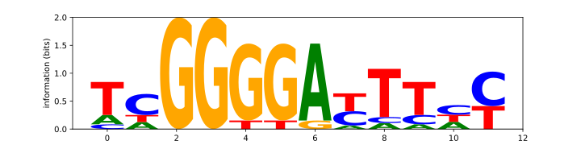
↩PREREQUISITES↩
WHAT: Given a motif matrix and a k-mer, calculate the probability of that k-mer being a member of that motif.
WHY: Being able to determine if a k-mer is potentially a member of a motif can help speed up experiments. For example, imagine that you suspect 21 different genes of being regulated by the same transcription factor. You isolate the transcription factor binding site for 6 of those genes and use their sequences as the underlying k-mers for a motif matrix. That motif matrix doesn't represent the transcription factor's motif exactly, but it's close enough that you can use it to scan through the k-mers in the remaining 15 genes and calculate the probability of them being members of the same motif.
If a k-mer exists such that it conforms to the motif matrix with a high probability, it likely is a member of the motif.
ALGORITHM:
Imagine the following motif matrix:
| 0 | 1 | 2 | 3 | 4 | 5 |
|---|---|---|---|---|---|
| A | T | G | C | A | C |
| A | T | G | C | A | C |
| A | T | C | C | A | C |
| A | T | C | C | A | C |
Calculating the counts for that motif matrix results in:
| 0 | 1 | 2 | 3 | 4 | 5 | |
|---|---|---|---|---|---|---|
| A | 4 | 0 | 0 | 0 | 4 | 0 |
| C | 0 | 0 | 2 | 4 | 0 | 4 |
| T | 0 | 4 | 0 | 0 | 0 | 0 |
| G | 0 | 0 | 2 | 0 | 0 | 0 |
Calculating the profile from those counts results in:
| 0 | 1 | 2 | 3 | 4 | 5 | |
|---|---|---|---|---|---|---|
| A | 1 | 0 | 0 | 0 | 1 | 0 |
| C | 0 | 0 | 0.5 | 1 | 0 | 1 |
| T | 0 | 1 | 0 | 0 | 0 | 0 |
| G | 0 | 0 | 0.5 | 0 | 0 | 0 |
Using this profile, the probability that a k-mer conforms to the motif matrix is calculated by mapping the nucleotide at each position of the k-mer to the corresponding nucleotide in the corresponding position of the profile and multiplying them together. For example, the probability that the k-mer...
Of the these two k-mers, ...
Both of these k-mers should have a reasonable probability of being members of the motif. However, notice how the second k-mer ends up with a 0 probability. The reason has to do with the underlying concept behind motif matrices: the entire point of a motif matrix is to use the known members of a motif to find other potential members of that same motif. The second k-mer contains a T at index 0, but none of the known members of the motif have a T at that index. As such, its probability gets reduced to 0 even though the rest of the k-mer conforms.
Cromwell's rule says that when a probability is based off past events, a hard 0 or 1 values shouldn't be used. As such, a quick workaround to the 0% probability problem described above is to artificially inflate the counts that lead to the profile such that no count is 0 (pseudocounts). For example, for the same motif matrix, incrementing the counts by 1 results in:
| 0 | 1 | 2 | 3 | 4 | 5 | |
|---|---|---|---|---|---|---|
| A | 5 | 1 | 1 | 1 | 5 | 1 |
| C | 1 | 1 | 3 | 5 | 1 | 5 |
| T | 1 | 5 | 1 | 1 | 1 | 1 |
| G | 1 | 1 | 3 | 1 | 1 | 1 |
Calculating the profile from those inflated counts results in:
| 0 | 1 | 2 | 3 | 4 | 5 | |
|---|---|---|---|---|---|---|
| A | 0.625 | 0.125 | 0.125 | 0.125 | 0.625 | 0.125 |
| C | 0.125 | 0.125 | 0.375 | 0.625 | 0.125 | 0.625 |
| T | 0.125 | 0.625 | 0.125 | 0.125 | 0.125 | 0.125 |
| G | 0.125 | 0.125 | 0.375 | 0.125 | 0.125 | 0.125 |
Using this new profile, the probability that the previous k-mers conform are:
Although the probabilities seem low, it's all relative. The probability calculated for the first k-mer (ATGCAC) is the highest probability possible -- each position in the k-mer maps to the highest probability nucleotide of the corresponding position of the profile.
# Run this on the counts before generating the profile to avoid the 0 probability problem.
def apply_psuedocounts_to_count_matrix(counts: Dict[str, List[int]], extra_count: int = 1):
for elem, elem_counts in counts.items():
for i in range(len(elem_counts)):
elem_counts[i] += extra_count
# Recall that a profile matrix is a matrix of probabilities. Each row represents a single element (e.g. nucleotide) and
# each column represents the probability distribution for that position.
#
# So for example, imagine the following probability distribution...
#
# 1 2 3 4
# A: 0.2 0.2 0.0 0.0
# C: 0.1 0.6 0.0 0.0
# G: 0.1 0.0 1.0 1.0
# T: 0.7 0.2 0.0 0.0
#
# At position 2, the probability that the element will be C is 0.6 while the probability that it'll be T is 0.2. Note
# how each column sums to 1.
def determine_probability_of_match_using_profile_matrix(profile: Dict[str, List[float]], kmer: str):
prob = 1.0
for idx, elem in enumerate(kmer):
prob = prob * profile[elem][idx]
return prob
def find_most_probable_kmer_using_profile_matrix(profile: Dict[str, List[float]], dna: str):
k = len(list(profile.values())[0])
most_probable: Tuple[str, float] = None # [kmer, probability]
for kmer, _ in slide_window(dna, k):
prob = determine_probability_of_match_using_profile_matrix(profile, kmer)
if most_probable is None or prob > most_probable[1]:
most_probable = (kmer, prob)
return most_probableMotif matrix...
ATGCAC
ATGCAC
ATCCAC
Probability that TTGCAC matches the motif 0.0...
↩PREREQUISITES↩
WHAT: Given a set of sequences, find k-mers in those sequences that may be members of the same motif.
WHY: A transcription factor is an enzyme that either increases or decreases a gene's transcription rate. It does so by binding to a specific part of the gene's upstream region called the transcription factor binding site. That transcription factor binding site consists of a k-mer that matches the motif expected by that transcription factor, called a regulatory motif.
A single transcription factor may operate on many different genes. Often times a scientist will identify a set of genes that are suspected to be regulated by a single transcription factor, but that scientist won't know ...
The regulatory motif expected by a transcription factor typically expects k-mers that have the same length and are similar to each other (short hamming distance). As such, potential motif candidates can be derived by finding k-mers across the set of sequences that are similar to each other.
ALGORITHM:
This algorithm scans over all k-mers in a set of DNA sequences, enumerates the hamming distance neighbourhood of each k-mer, and uses the k-mers from the hamming distance neighbourhood to build out possible motif matrices. Of all the motif matrices built, it selects the one with the lowest score.
Neither k nor the mismatches allowed by the motif is known. As such, the algorithm may need to be repeated multiple times with different value combinations.
Even for trivial inputs, this algorithm falls over very quickly. It's intended to help conceptualize the problem of motif finding.
def enumerate_hamming_distance_neighbourhood_for_all_kmer(
dna: str, # dna strings to search in for motif
k: int, # k-mer length
max_mismatches: int # max num of mismatches for motif (hamming dist)
) -> Set[str]:
kmers_to_check = set()
for kmer, _ in slide_window(dna, k):
neighbouring_kmers = find_all_dna_kmers_within_hamming_distance(kmer, max_mismatches)
kmers_to_check |= neighbouring_kmers
return kmers_to_check
def exhaustive_motif_search(dnas: List[str], k: int, max_mismatches: int):
kmers_for_dnas = [enumerate_hamming_distance_neighbourhood_for_all_kmer(dna, k, max_mismatches) for dna in dnas]
def build_next_matrix(out_matrix: List[str]):
idx = len(out_matrix)
if len(kmers_for_dnas) == idx:
yield out_matrix[:]
else:
for kmer in kmers_for_dnas[idx]:
out_matrix.append(kmer)
yield from build_next_matrix(out_matrix)
out_matrix.pop()
best_motif_matrix = None
for next_motif_matrix in build_next_matrix([]):
if best_motif_matrix is None or score_motif(next_motif_matrix) < score_motif(best_motif_matrix):
best_motif_matrix = next_motif_matrix
return best_motif_matrixSearching for motif of k=5 and a max of 1 mismatches in the following...
ATAAAGGGATA
ACAGAAATGAT
TGAAATAACCT
Found the motif matrix...
AAAGA
AAAGA
AAAGA
↩PREREQUISITES↩
ALGORITHM:
This algorithm takes advantage of the fact that the same score can be derived by scoring a motif matrix either row-by-row or column-by-column. For example, the score for the following motif matrix is 3...
| 0 | 1 | 2 | 3 | 4 | 5 | ||
|---|---|---|---|---|---|---|---|
| A | T | G | C | A | C | ||
| A | T | G | C | A | C | ||
| A | T | C | C | T | C | ||
| A | T | C | C | A | C | ||
| Score | 0 | 0 | 2 | 0 | 1 | 0 | 3 |
For each column, the number of unpopular nucleotides is counted. Then, those counts are summed to get the score: 0 + 0 + 2 + 0 + 1 + 0 = 3.
That exact same score scan be calculated by working through the motif matrix row-by-row...
| 0 | 1 | 2 | 3 | 4 | 5 | Score |
|---|---|---|---|---|---|---|
| A | T | G | C | A | C | 1 |
| A | T | G | C | A | C | 1 |
| A | T | C | C | T | C | 1 |
| A | T | C | C | A | C | 0 |
| 3 |
For each row, the number of unpopular nucleotides is counted. Then, those counts are summed to get the score: 1 + 1 + 1 + 0 = 3.
| 0 | 1 | 2 | 3 | 4 | 5 | Score | |
|---|---|---|---|---|---|---|---|
| A | T | G | C | A | C | 1 | |
| A | T | G | C | A | C | 1 | |
| A | T | C | C | T | C | 1 | |
| A | T | C | C | A | C | 0 | |
| Score | 0 | 0 | 2 | 0 | 1 | 0 | 3 |
Notice how each row's score is equivalent to the hamming distance between the k-mer at that row and the motif matrix's consensus string. Specifically, the consensus string for the motif matrix is ATCCAC. For each row, ...
Given these facts, this algorithm constructs a set of consensus strings by enumerating through all possible k-mers for some k. Then, for each consensus string, it scans over each sequence to find the k-mer that minimizes the hamming distance for that consensus string. These k-mers are used as the members of a motif matrix.
Of all the motif matrices built, the one with the lowest score is selected.
Since the k for the motif is unknown, this algorithm may need to be repeated multiple times with different k values. This algorithm also doesn't scale very well. For k=10, 1048576 different consensus strings are possible.
# The name is slightly confusing. What this actually does...
# For each dna string:
# Find the k-mer with the min hamming distance between the k-mers that make up the DNA string and pattern
# Sum up the min hamming distances of the found k-mers (equivalent to the motif matrix score)
def distance_between_pattern_and_strings(pattern: str, dnas: List[str]) -> int:
min_hds = []
k = len(pattern)
for dna in dnas:
min_hd = None
for dna_kmer, _ in slide_window(dna, k):
hd = hamming_distance(pattern, dna_kmer)
if min_hd is None or hd < min_hd:
min_hd = hd
min_hds.append(min_hd)
return sum(min_hds)
def median_string(k: int, dnas: List[str]):
last_best: Tuple[str, int] = None # last found consensus string and its score
for kmer in enumerate_patterns(k):
score = distance_between_pattern_and_strings(kmer, dnas) # find score of best motif matrix where consensus str is kmer
if last_best is None or score < last_best[1]:
last_best = kmer, score
return last_bestSearching for motif of k=3 in the following...
AAATTGACGCAT
GACGACCACGTT
CGTCAGCGCCTG
GCTGAGCACCGG
AGTTCGGGACAG
Found the consensus string GAC with a score of 2
ALGORITHM:
This algorithm begins by constructing a motif matrix where the only member is a k-mer picked from the first sequence. From there, it goes through the k-mers in the ...
This process repeats once for every k-mer in the first sequence. Each repetition produces a motif matrix. Of all the motif matrices built, the one with the lowest score is selected.
This is a greedy algorithm. It builds out potential motif matrices by selecting the locally optimal k-mer from each sequence. While this may not lead to the globally optimal motif matrix, it's fast and has a higher than normal likelihood of picking out the correct motif matrix.
def greedy_motif_search_with_psuedocounts(k: int, dnas: List[str]):
best_motif_matrix = [dna[0:k] for dna in dnas]
for motif, _ in slide_window(dnas[0], k):
motif_matrix = [motif]
counts = motif_matrix_count(motif_matrix)
apply_psuedocounts_to_count_matrix(counts)
profile = motif_matrix_profile(counts)
for dna in dnas[1:]:
next_motif, _ = find_most_probable_kmer_using_profile_matrix(profile, dna)
# push in closest kmer as a motif member and recompute profile for the next iteration
motif_matrix.append(next_motif)
counts = motif_matrix_count(motif_matrix)
apply_psuedocounts_to_count_matrix(counts)
profile = motif_matrix_profile(counts)
if score_motif(motif_matrix) < score_motif(best_motif_matrix):
best_motif_matrix = motif_matrix
return best_motif_matrixSearching for motif of k=3 in the following...
AAATTGACGCAT
GACGACCACGTT
CGTCAGCGCCTG
GCTGAGCACCGG
AGTTCGGGACAG
Found the motif matrix...
GAC
GAC
GTC
GAG
GAC
↩PREREQUISITES↩
ALGORITHM:
This algorithm selects a random k-mer from each sequence to form an initial motif matrix. Then, for each sequence, it finds the k-mer that has the highest probability of matching that motif matrix. Those k-mers form the members of a new motif matrix. If the new motif matrix scores better than the existing motif matrix, the existing motif matrix gets replaced with the new motif matrix and the process repeats. Otherwise, the existing motif matrix is selected.
In theory, this algorithm works because all k-mers in a sequence other than the motif member are considered to be random noise. As such, if no motif members were selected when creating the initial motif matrix, the profile of that initial motif matrix would be more or less uniform:
| 0 | 1 | 2 | 3 | 4 | 5 | |
|---|---|---|---|---|---|---|
| A | 0.25 | 0.25 | 0.25 | 0.25 | 0.25 | 0.25 |
| C | 0.25 | 0.25 | 0.25 | 0.25 | 0.25 | 0.25 |
| T | 0.25 | 0.25 | 0.25 | 0.25 | 0.25 | 0.25 |
| G | 0.25 | 0.25 | 0.25 | 0.25 | 0.25 | 0.25 |
Such a profile wouldn't allow for converging to a vastly better scoring motif matrix.
However, if at least one motif member were selected when creating the initial motif matrix, the profile of that initial motif matrix would skew towards the motif:
| 0 | 1 | 2 | 3 | 4 | 5 | |
|---|---|---|---|---|---|---|
| A | 0.333 | 0.233 | 0.233 | 0.233 | 0.333 | 0.233 |
| C | 0.233 | 0.233 | 0.333 | 0.333 | 0.233 | 0.333 |
| T | 0.233 | 0.333 | 0.233 | 0.233 | 0.233 | 0.233 |
| G | 0.233 | 0.233 | 0.233 | 0.233 | 0.233 | 0.233 |
Such a profile would lead to a better scoring motif matrix where that better scoring motif matrix contains the other members of the motif.
In practice, this algorithm may trip up on real-world data. Real-world sequences don't actually contain random noise. The hope is that the only k-mers that are highly similar to each other in the sequences are members of the motif. It's possible that the sequences contain other sets of k-mers that are similar to each other but vastly different than the motif members. In such cases, even if a motif member were to be selected when creating the initial motif matrix, the algorithm may converge to a motif matrix that isn't for the motif.
This is a monte carlo algorithm. It uses randomness to deliver an approximate solution. While this may not lead to the globally optimal motif matrix, it's fast and as such can be run multiple times. The run with the best motif matrix will likely be a good enough solution (it captures most of the motif members, or parts of the motif members if k was too small, or etc..).
def randomized_motif_search_with_psuedocounts(k: int, dnas: List[str]) -> List[str]:
motif_matrix = []
for dna in dnas:
start = randrange(len(dna) - k + 1)
kmer = dna[start:start + k]
motif_matrix.append(kmer)
best_motif_matrix = motif_matrix
while True:
counts = motif_matrix_count(motif_matrix)
apply_psuedocounts_to_count_matrix(counts)
profile = motif_matrix_profile(counts)
motif_matrix = [find_most_probable_kmer_using_profile_matrix(profile, dna)[0] for dna in dnas]
if score_motif(motif_matrix) < score_motif(best_motif_matrix):
best_motif_matrix = motif_matrix
else:
return best_motif_matrixSearching for motif of k=3 in the following...
AAATTGACGCAT
GACGACCACGTT
CGTCAGCGCCTG
GCTGAGCACCGG
AGTTCGGGACAG
Running 1000 iterations...
Best found the motif matrix...
GAC
GAC
GTC
GAG
GAC
↩PREREQUISITES↩
ALGORITHM:
⚠️NOTE️️️⚠️
The Pevzner book mentions there's more to Gibbs Sampling than what it discussed. I looked up the topic but couldn't make much sense of it.
This algorithm selects a random k-mer from each sequence to form an initial motif matrix. Then, one of the k-mers from the motif matrix is randomly chosen and replaced with another k-mer from the same sequence that the removed k-mer came from. The replacement is selected by using a weighted random number algorithm, where how likely a k-mer is to be chosen as a replacement has to do with how probable of a match it is to the motif matrix.
This process of replacement is repeated for some user-defined number of cycles, at which point the algorithm has hopefully homed in on the desired motif matrix.
This is a monte carlo algorithm. It uses randomness to deliver an approximate solution. While this may not lead to the globally optimal motif matrix, it's fast and as such can be run multiple times. The run with the best motif matrix will likely be a good enough solution (it captures most of the motif members, or parts of the motif members if k was too small, or etc..).
The idea behind this algorithm is similar to the idea behind the randomized algorithm for motif matrix finding, except that this algorithm is more conservative in how it converges on a motif matrix and the weighted random selection allows it to potentially break out if stuck in a local optima.
def gibbs_rand(prob_dist: List[float]) -> int:
# normalize prob_dist -- just incase sum(prob_dist) != 1.0
prob_dist_sum = sum(prob_dist)
prob_dist = [p / prob_dist_sum for p in prob_dist]
while True:
selection = randrange(0, len(prob_dist))
if random() < prob_dist[selection]:
return selection
def determine_probabilities_of_all_kmers_in_dna(profile_matrix: Dict[str, List[float]], dna: str, k: int) -> List[int]:
ret = []
for kmer, _ in slide_window(dna, k):
prob = determine_probability_of_match_using_profile_matrix(profile_matrix, kmer)
ret.append(prob)
return ret
def gibbs_sampler_motif_search_with_psuedocounts(k: int, dnas: List[str], cycles: int) -> List[str]:
motif_matrix = []
for dna in dnas:
start = randrange(len(dna) - k + 1)
kmer = dna[start:start + k]
motif_matrix.append(kmer)
best_motif_matrix = motif_matrix[:] # create a copy, otherwise you'll be modifying both motif and best_motif
for j in range(0, cycles):
i = randrange(len(dnas)) # pick a dna
del motif_matrix[i] # remove the kmer for that dna from the motif str
counts = motif_matrix_count(motif_matrix)
apply_psuedocounts_to_count_matrix(counts)
profile = motif_matrix_profile(counts)
new_motif_kmer_probs = determine_probabilities_of_all_kmers_in_dna(profile, dnas[i], k)
new_motif_kmer_idx = gibbs_rand(new_motif_kmer_probs)
new_motif_kmer = dnas[i][new_motif_kmer_idx:new_motif_kmer_idx+k]
motif_matrix.insert(i, new_motif_kmer)
if score_motif(motif_matrix) < score_motif(best_motif_matrix):
best_motif_matrix = motif_matrix[:] # create a copy, otherwise you'll be modifying both motif and best_motif
return best_motif_matrixSearching for motif of k=3 in the following...
AAATTGACGCAT
GACGACCACGTT
CGTCAGCGCCTG
GCTGAGCACCGG
AGTTCGGGACAG
Running 1000 iterations...
Best found the motif matrix...
GAC
GAC
GTC
CAC
GAC
↩PREREQUISITES↩
WHAT: When creating finding a motif, it may be beneficial to use a hybrid alphabet rather than the standard nucleotides (A, C, T, and G). For example, the following hybrid alphabet marks certain combinations of nucleotides as a single letter:
⚠️NOTE️️️⚠️
The alphabet above was pulled from the Pevzner book section 2.16: Complications in Motif Finding. It's a subset of the IUPAC nucleotide codes alphabet. The author didn't mention if the alphabet was explicitly chosen for regulatory motif finding. If it was, it may have been derived from running probabilities over already discovered regulatory motifs: e.g. for the motifs already discovered, if a position has 2 possible nucleotides then G/C (S), G/T (K), C/T (Y), and A/T (W) are likely but other combinations aren't.
WHY: Hybrid alphabets may make it easier for motif finding algorithms to converge on a motif. For example, when scoring a motif matrix, treat the position as a single letter if the distinct nucleotides at that position map to one of the combinations in the hybrid alphabet.
Hybrid alphabets may make more sense for representing a consensus string. Rather than picking out the most popular nucleotide, the hybrid alphabet can be used to describe alternating nucleotides at each position.
ALGORITHM:
PEVZNER_2_16_ALPHABET = dict()
PEVZNER_2_16_ALPHABET[frozenset({'A', 'T'})] = 'W'
PEVZNER_2_16_ALPHABET[frozenset({'G', 'C'})] = 'S'
PEVZNER_2_16_ALPHABET[frozenset({'G', 'T'})] = 'K'
PEVZNER_2_16_ALPHABET[frozenset({'C', 'T'})] = 'Y'
def to_hybrid_alphabet_motif_matrix(motif_matrix: List[str], hybrid_alphabet: Dict[FrozenSet[str], str]) -> List[str]:
rows = len(motif_matrix)
cols = len(motif_matrix[0])
motif_matrix = motif_matrix[:] # make a copy
for c in range(cols):
distinct_nucs_at_c = frozenset([motif_matrix[r][c] for r in range(rows)])
if distinct_nucs_at_c in hybrid_alphabet:
for r in range(rows):
motif_member = motif_matrix[r]
motif_member = motif_member[:c] + hybrid_alphabet[distinct_nucs_at_c] + motif_member[c+1:]
motif_matrix[r] = motif_member
return motif_matrixConverted...
CATCCG
CTTCCT
CATCTT
to...
CWTCYK
CWTCYK
CWTCYK
using...
{frozenset({'T', 'A'}): 'W', frozenset({'G', 'C'}): 'S', frozenset({'G', 'T'}): 'K', frozenset({'C', 'T'}): 'Y'}
↩PREREQUISITES↩
DNA sequencers work by taking many copies of an organism's genome, breaking up those copies into fragments, then scanning in those fragments. Sequencers typically scan fragments in 1 of 2 ways:
reads - small DNA fragments of equal size (represented as k-mers).

read-pairs - small DNA fragments of equal size where the bases in the middle part of the fragment aren't known (represented as kd-mers).

Assembly is the process of reconstructing an organism's genome from the fragments returned by a sequencer. Since the sequencer breaks up many copies of the same genome and each fragment's start position is random, the original genome can be reconstructed by finding overlaps between fragments and stitching them back together.
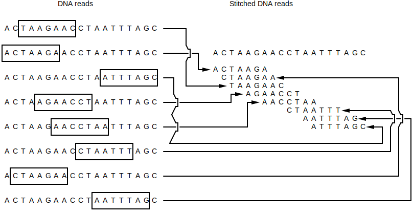
A typical problem with sequencing is that the number of errors in a fragment increase as the number of scanned bases increases. As such, read-pairs are preferred over reads: by only scanning in the head and tail of a long fragment, the scan won't contain as many errors as a read of the same length but will still contain extra information which helps with assembly (length of unknown nucleotides in between the prefix and suffix).
Assembly has many practical complications that prevent full genome reconstruction from fragments:
Which strand of double stranded DNA that a read / read-pair comes from isn't known, which means the overlaps you find may not be accurate.
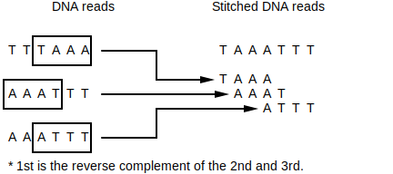
The fragments may not cover the entire genome, which prevents full reconstruction.
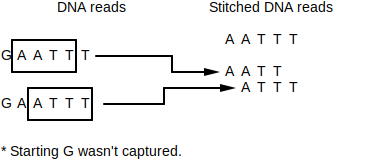
The fragments may have errors (e.g. wrong nucleotides scanned in), which may prevent finding overlaps.
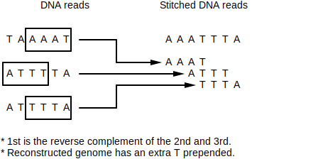
The fragments for repetitive parts of the genome (e.g. transposons) likely can't be accurately assembled.

WHAT: Given a list of overlapping reads where ...
... , stitch them together. For example, in the read list [GAAA, AAAT, AATC] each read overlaps the subsequent read by an offset of 1: GAAATC.
| 0 | 1 | 2 | 3 | 4 | 5 | |
|---|---|---|---|---|---|---|
| R1 | G | A | A | A | ||
| R2 | A | A | A | T | ||
| R3 | A | A | T | C | ||
| Stitched | G | A | A | A | T | C |
WHY: Since the sequencer breaks up many copies of the same DNA and each read's start position is random, larger parts of the original DNA can be reconstructed by finding overlaps between fragments and stitching them back together.
ALGORITHM:
def append_overlap(self: Read, other: Read, skip: int = 1) -> Read:
offset = len(self.data) - len(other.data)
data_head = self.data[:offset]
data = self.data[offset:]
prefix = data[:skip]
overlap1 = data[skip:]
overlap2 = other.data[:-skip]
suffix = other.data[-skip:]
ret = data_head + prefix
for ch1, ch2 in zip(overlap1, overlap2):
ret += ch1 if ch1 == ch2 else '?' # for failure, use IUPAC nucleotide codes instead of question mark?
ret += suffix
return Read(ret, source=('overlap', [self, other]))
@staticmethod
def stitch(items: List[Read], skip: int = 1) -> str:
assert len(items) > 0
ret = items[0]
for other in items[1:]:
ret = ret.append_overlap(other, skip)
return ret.dataStitched [GAAA, AAAT, AATC] to GAAATC
↩PREREQUISITES↩
WHAT: Given a list of overlapping read-pairs where ...
... , stitch them together. For example, in the read-pair list [ATG---CCG, TGT---CGT, GTT---GTT, TTA---TTC] each read-pair overlaps the subsequent read-pair by an offset of 1: ATGTTACCGTTC.
| 0 | 1 | 2 | 3 | 4 | 5 | 6 | 7 | 8 | 9 | 10 | 11 | |
|---|---|---|---|---|---|---|---|---|---|---|---|---|
| R1 | A | T | G | - | - | - | C | C | G | |||
| R2 | T | G | T | - | - | - | C | G | T | |||
| R3 | G | T | T | - | - | - | G | T | T | |||
| R4 | T | T | A | - | - | - | T | T | C | |||
| Stitched | A | T | G | T | T | A | C | C | G | T | T | C |
WHY: Since the sequencer breaks up many copies of the same DNA and each read's start position is random, larger parts of the original DNA can be reconstructed by finding overlaps between fragments and stitching them back together.
ALGORITHM:
Overlapping read-pairs are stitched by taking the first read-pair and iterating through the remaining read-pairs where ...
For example, to stitch [ATG---CCG, TGT---CGT], ...
| 0 | 1 | 2 | 3 | 4 | 5 | 6 | 7 | 8 | 9 | |
|---|---|---|---|---|---|---|---|---|---|---|
| R1 | A | T | G | - | - | - | C | C | G | |
| R2 | T | G | T | - | - | - | C | G | T | |
| Stitched | A | T | G | T | - | - | C | C | G | T |
def append_overlap(self: ReadPair, other: ReadPair, skip: int = 1) -> ReadPair:
self_head = Read(self.data.head)
other_head = Read(other.data.head)
new_head = self_head.append_overlap(other_head)
new_head = new_head.data
self_tail = Read(self.data.tail)
other_tail = Read(other.data.tail)
new_tail = self_tail.append_overlap(other_tail)
new_tail = new_tail.data
# WARNING: new_d may go negative -- In the event of a negative d, it means that rather than there being a gap
# in between the head and tail, there's an OVERLAP in between the head and tail. To get rid of the overlap, you
# need to remove either the last d chars from head or first d chars from tail.
new_d = self.d - skip
kdmer = Kdmer(new_head, new_tail, new_d)
return ReadPair(kdmer, source=('overlap', [self, other]))
@staticmethod
def stitch(items: List[ReadPair], skip: int = 1) -> str:
assert len(items) > 0
ret = items[0]
for other in items[1:]:
ret = ret.append_overlap(other, skip)
assert ret.d <= 0, "Gap still exists -- not enough to stitch"
overlap_count = -ret.d
return ret.data.head + ret.data.tail[overlap_count:]Stitched [ATG---CCG, TGT---CGT, GTT---GTT, TTA---TTC] to ATGTTACCGTTC
WHAT: Given a set of reads that arbitrarily overlap, each read can be broken into many smaller reads that overlap better. For example, given 4 10-mers that arbitrarily overlap, you can break them into better overlapping 5-mers...

WHY: Breaking reads may cause more ambiguity in overlaps. At the same time, read breaking makes it easier to find overlaps by bringing the overlaps closer together and provides (artificially) increased coverage.
ALGORITHM:
# This is read breaking -- why not just call it break? because break is a reserved keyword.
def shatter(self: Read, k: int) -> List[Read]:
ret = []
for kmer, _ in slide_window(self.data, k):
r = Read(kmer, source=('shatter', [self]))
ret.append(r)
return retBroke ACTAAGAACC to [ACTAA, CTAAG, TAAGA, AAGAA, AGAAC, GAACC]
↩PREREQUISITES↩
WHAT: Given a set of read-pairs that arbitrarily overlap, each read-pair can be broken into many read-pairs with a smaller k that overlap better. For example, given 4 (4,2)-mers that arbitrarily overlap, you can break them into better overlapping (2,4)-mers...
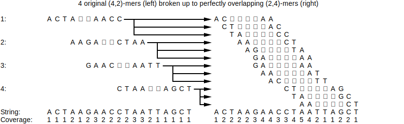
WHY: Breaking read-pairs may cause more ambiguity in overlaps. At the same time, read-pair breaking makes it easier to find overlaps by bringing the overlaps closer together and provides (artificially) increased coverage.
ALGORITHM:
# This is read breaking -- why not just call it break? because break is a reserved keyword.
def shatter(self: ReadPair, k: int) -> List[ReadPair]:
ret = []
d = (self.k - k) + self.d
for window_head, window_tail in zip(slide_window(self.data.head, k), slide_window(self.data.tail, k)):
kmer_head, _ = window_head
kmer_tail, _ = window_tail
kdmer = Kdmer(kmer_head, kmer_tail, d)
rp = ReadPair(kdmer, source=('shatter', [self]))
ret.append(rp)
return retBroke ACTA--AACC to [AC----AA, CT----AC, TA----CC]
↩PREREQUISITES↩
WHAT: Sequencers work by taking many copies of an organism's genome, randomly breaking up those genomes into smaller pieces, and randomly scanning in those pieces (fragments). As such, it isn't immediately obvious how many times each fragment actually appears in the genome.
Imagine that you're sequencing an organism's genome. Given that ...
... you can use probabilities to hint at how many times a fragment appears in the genome.
WHY:
Determining how many times a fragment appears in a genome helps with assembly. Specifically, ...
ALGORITHM:
⚠️NOTE️️️⚠️
For simplicity's sake, the genome is single-stranded (not double-stranded DNA / no reverse complementing stand).
Imagine a genome of ATGGATGC. A sequencer runs over that single strand and generates 3-mer reads with roughly 30x coverage. The resulting fragments are ...
| Read | # of Copies |
|---|---|
| ATG | 61 |
| TGG | 30 |
| GAT | 31 |
| TGC | 29 |
| TGT | 1 |
Since the genome is known to have less than 50% repeats, the dominate number of copies likely maps to 1 instance of that read appearing in the genome. Since the dominate number is ~30, divide the number of copies for each read by ~30 to find out roughly how many times each read appears in the genome ...
| Read | # of Copies | # of Appearances in Genome |
|---|---|---|
| ATG | 61 | 2 |
| TGG | 30 | 1 |
| GAT | 31 | 1 |
| TGC | 29 | 1 |
| TGT | 1 | 0.03 |
Note the last read (TGT) has 0.03 appearances, meaning it's a read that it either
In this case, it's an error because it doesn't appear in the original genome: TGT is not in ATGGATGC.
# If less than 50% of the reads are from repeats, this attempts to count and normalize such that it can hint at which
# reads may contain errors (= ~0) and which reads are for repeat regions (> 1.0).
def calculate_fragment_occurrence_probabilities(fragments: List[T]) -> Dict[T, float]:
counter = Counter(fragments)
max_digit_count = max([len(str(count)) for count in counter.values()])
for i in range(max_digit_count):
rounded_counter = Counter(dict([(k, round(count, -i)) for k, count in counter.items()]))
for k, orig_count in counter.items():
if rounded_counter[k] == 0:
rounded_counter[k] = orig_count
most_occurring_count, times_counted = Counter(rounded_counter.values()).most_common(1)[0]
if times_counted >= len(rounded_counter) * 0.5:
return dict([(key, value / most_occurring_count) for key, value in rounded_counter.items()])
raise ValueError(f'Failed to find a common count: {counter}')Sequenced fragments:
Probability of occurrence in genome:
↩PREREQUISITES↩
WHAT: Given the fragments for a single strand of DNA, create a directed graph where ...
each node is a fragment.

each edge is between overlapping fragments (nodes), where the ...

This is called an overlap graph.
WHY: An overlap graph shows the different ways that fragments can be stitched together. A path in in an overlap graph that touches each node exactly once is one possibility for the original single stranded DNA that the fragments came from. For example...
These paths are referred to as Hamiltonian paths.
⚠️NOTE️️️⚠️
Notice that the example graph is circular. If the organism genome itself were also circular (e.g. bacterial genome), the genome guesses above are all actually the same because circular genomes don't have a beginning / end.
ALGORITHM:
Sequencers produce fragments, but fragments by themselves typically aren't enough for most experiments / algorithms. In theory, stitching overlapping fragments for a single-strand of DNA should reveal that single-strand of DNA. In practice, real-world complications make revealing that single-strand of DNA nearly impossible:
Never the less, in an ideal world where most of these problems don't exist, an overlap graph is a good way to guess the single-strand of DNA that a set of fragments came from. An overlap graph assumes that the fragments it's operating on ...
⚠️NOTE️️️⚠️
Although the complications discussed above make it impossible to get the original genome in its entirety, it's still possible to pull out large parts of the original genome. This is discussed in Algorithms/Assembly/Find Contigs.
To construct an overlap graph, create an edge between fragments that have an overlap.
For each fragment, add that fragment's ...
Then, join the hash tables together to find overlapping fragments.
def to_overlap_graph(items: List[T], skip: int = 1) -> Graph[T]:
ret = Graph()
prefixes = dict()
suffixes = dict()
for i, item in enumerate(items):
prefix = item.prefix(skip)
prefixes.setdefault(prefix, set()).add(i)
suffix = item.suffix(skip)
suffixes.setdefault(suffix, set()).add(i)
for key, indexes in suffixes.items():
other_indexes = prefixes.get(key)
if other_indexes is None:
continue
for i in indexes:
item = items[i]
for j in other_indexes:
if i == j:
continue
other_item = items[j]
ret.insert_edge(item, other_item)
return retGiven the fragments ['TTA', 'TTA', 'TAG', 'AGT', 'GTT', 'TAC', 'ACT', 'CTT'], the overlap graph is...
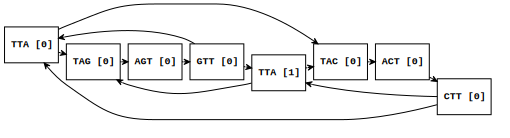
A path that touches each node of an graph exactly once is a Hamiltonian path. Each The Hamiltonian path in an overlap graph is a guess as to the original single strand of DNA that the fragments for the graph came from.
The code shown below recursively walks all paths. Of all the paths it walks over, the ones that walk every node of the graph exactly once are selected.
This algorithm will likely fall over on non-trivial overlap graphs. Even finding one Hamiltonian path is computationally intensive.
def exhaustively_walk_until_all_nodes_touched_exactly_one(
graph: Graph[T],
from_node: T,
current_path: List[T]
) -> List[List[T]]:
current_path.append(from_node)
if len(current_path) == len(graph):
found_paths = [current_path.copy()]
else:
found_paths = []
for to_node in graph.get_outputs(from_node):
if to_node in set(current_path):
continue
found_paths += exhaustively_walk_until_all_nodes_touched_exactly_one(graph, to_node, current_path)
current_path.pop()
return found_paths
# walk each node exactly once
def walk_hamiltonian_paths(graph: Graph[T], from_node: T) -> List[List[T]]:
return exhaustively_walk_until_all_nodes_touched_exactly_one(graph, from_node, [])Given the fragments ['TTA', 'TTA', 'TAG', 'AGT', 'GTT', 'TAC', 'ACT', 'CTT'], the overlap graph is...
... and the Hamiltonian paths are ...
↩PREREQUISITES↩
WHAT: Given the fragments for a single strand of DNA, create a directed graph where ...
each fragment is represented as an edge connecting 2 nodes, where the ...
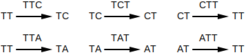
duplicate nodes are merged into a single node.
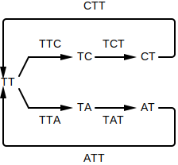
This graph is called a de Bruijn graph: a balanced and strongly connected graph where the fragments are represented as edges.
⚠️NOTE️️️⚠️
The example graph above is balanced. But, depending on the fragments used, the graph may not be totally balanced. A technique for dealing with this is detailed below. For now, just assume that the graph will be balanced.
WHY: Similar to an overlap graph, a de Bruijn graph shows the different ways that fragments can be stitched together. However, unlike an overlap graph, the fragments are represented as edges rather than nodes. Where in an overlap graph you need to find paths that touch every node exactly once (Hamiltonian path), in a de Bruijn graph you need to find paths that walk over every edge exactly once (Eulerian cycle).
A path in a de Bruijn graph that walks over each edge exactly once is one possibility for the original single stranded DNA that the fragments came from: it starts and ends at the same node (a cycle), and walks over every edge in the graph.
In contrast to finding a Hamiltonian path in an overlap graph, it's much faster to find an Eulerian cycle in an de Bruijn graph.
De Bruijn graphs were originally invented to solve the k-universal string problem, which is effectively the same concept as assembly.
ALGORITHM:
Sequencers produce fragments, but fragments by themselves typically aren't enough for most experiments / algorithms. In theory, stitching overlapping fragments for a single-strand of DNA should reveal that single-strand of DNA. In practice, real-world complications make revealing that single-strand of DNA nearly impossible:
Never the less, in an ideal world where most of these problems don't exist, an de Bruijn graph is a good way to guess the single-strand of DNA that a set of fragments came from. A de Bruijn graph assumes that the fragments it's operating on ...
⚠️NOTE️️️⚠️
Although the complications discussed above make it impossible to get the original genome in its entirety, it's still possible to pull out large parts of the original genome. This is discussed in Algorithms/Assembly/Find Contigs.
To construct a de Bruijn graph, add an edge for each fragment, creating missing nodes as required.
def to_debruijn_graph(reads: List[T], skip: int = 1) -> Graph[T]:
graph = Graph()
for read in reads:
from_node = read.prefix(skip)
to_node = read.suffix(skip)
graph.insert_edge(from_node, to_node)
return graphGiven the fragments ['TTAG', 'TAGT', 'AGTT', 'GTTA', 'TTAC', 'TACT', 'ACTT', 'CTTA'], the de Bruijn graph is...

Note how the graph above is both balanced and strongly connected. In most cases, non-circular genomes won't generate a balanced graph like the one above. Instead, a non-circular genome will very likely generate a graph that's nearly balanced: Nearly balanced graphs are graphs that are would be balanced if not for a few unbalanced nodes (usually root and tail nodes). They can artificially be made to become balanced by finding imbalanced nodes and creating artificial edges between them until they become balanced nodes.
⚠️NOTE️️️⚠️
Circular genomes are genomes that wrap around (e.g. bacterial genomes). They don't have a beginning / end.
def find_unbalanced_nodes(graph: Graph[T]) -> List[Tuple[T, int, int]]:
unbalanced_nodes = []
for node in graph.get_nodes():
in_degree = graph.get_in_degree(node)
out_degree = graph.get_out_degree(node)
if in_degree != out_degree:
unbalanced_nodes.append((node, in_degree, out_degree))
return unbalanced_nodes
# creates a balanced graph from a nearly balanced graph -- nearly balanced means the graph has an equal number of
# missing outputs and missing inputs.
def balance_graph(graph: Graph[T]) -> Tuple[Graph[T], Set[T], Set[T]]:
unbalanced_nodes = find_unbalanced_nodes(graph)
nodes_with_missing_ins = filter(lambda x: x[1] < x[2], unbalanced_nodes)
nodes_with_missing_outs = filter(lambda x: x[1] > x[2], unbalanced_nodes)
graph = graph.copy()
# create 1 copy per missing input / per missing output
n_per_need_in = [_n for n, in_degree, out_degree in nodes_with_missing_ins for _n in [n] * (out_degree - in_degree)]
n_per_need_out = [_n for n, in_degree, out_degree in nodes_with_missing_outs for _n in [n] * (in_degree - out_degree)]
assert len(n_per_need_in) == len(n_per_need_out) # need an equal count of missing ins and missing outs to balance
# balance
for n_need_in, n_need_out in zip(n_per_need_in, n_per_need_out):
graph.insert_edge(n_need_out, n_need_in)
return graph, set(n_per_need_in), set(n_per_need_out) # return graph with cycle, orig root nodes, orig tail nodesGiven the fragments ['TTAC', 'TACC', 'ACCC', 'CCCT'], the artificially balanced de Bruijn graph is...

... with original head nodes at {TTA} and tail nodes at {CCT}.
Given a de Bruijn graph (strongly connected and balanced), you can find a Eulerian cycle by randomly walking unexplored edges in the graph. Pick a starting node and randomly walk edges until you end up back at that same node, ignoring all edges that were previously walked over. Of the nodes that were walked over, pick one that still has unexplored edges and repeat the process: Walk edges from that node until you end up back at that same node, ignoring edges all edges that were previously walked over (including those in the past iteration). Continue this until you run out of unexplored edges.
# (6, 8), (8, 7), (7, 9), (9, 6) ----> 68796
def edge_list_to_node_list(edges: List[Tuple[T, T]]) -> List[T]:
ret = [edges[0][0]]
for e in edges:
ret.append(e[1])
return ret
def randomly_walk_and_remove_edges_until_cycle(graph: Graph[T], node: T) -> List[T]:
end_node = node
edge_list = []
from_node = node
while len(graph) > 0:
to_nodes = graph.get_outputs(from_node)
to_node = next(to_nodes, None)
assert to_node is not None # eularian graphs are strongly connected, meaning we should never hit dead-end nodes
graph.delete_edge(from_node, to_node, True, True)
edge = (from_node, to_node)
edge_list.append(edge)
from_node = to_node
if from_node == end_node:
return edge_list_to_node_list(edge_list)
assert False # eularian graphs are strongly connected and balanced, meaning we should never run out of nodes
# graph must be strongly connected
# graph must be balanced
# if the 2 conditions above are met, the graph will be eularian (a eulerian cycle exists)
def walk_eulerian_cycle(graph: Graph[T], start_node: T) -> List[T]:
graph = graph.copy()
node_cycle = randomly_walk_and_remove_edges_until_cycle(graph, start_node)
node_cycle_ptr = 0
while len(graph) > 0:
new_node_cycle = None
for local_ptr, node in enumerate(node_cycle[node_cycle_ptr:]):
if node not in graph:
continue
node_cycle_ptr += local_ptr
inject_node_cycle = randomly_walk_and_remove_edges_until_cycle(graph, node)
new_node_cycle = node_cycle[:]
new_node_cycle[node_cycle_ptr:node_cycle_ptr+1] = inject_node_cycle
break
assert new_node_cycle is not None
node_cycle = new_node_cycle
return node_cycleGiven the fragments ['TTA', 'TAT', 'ATT', 'TTC', 'TCT', 'CTT'], the de Bruijn graph is...

... and a Eulerian cycle is ...
TT -> TC -> CT -> TT -> TA -> AT -> TT
Note that the graph above is naturally balanced (no artificial edges have been added in to make it balanced). If the graph you're finding a Eulerian cycle on has been artificially balanced, simply start the search for a Eulerian cycle from one of the original head node. The artificial edge will show up at the end of the Eulerian cycle, and as such can be dropped from the path.

This algorithm picks one Eulerian cycle in a graph. Most graph have multiple Eulerian cycles, likely too many to enumerate all of them.
⚠️NOTE️️️⚠️
See the section on k-universal strings to see a real-world application of Eulerian graphs. For something like k=20, good luck trying to enumerate all Eulerian cycles.
↩PREREQUISITES↩
WHAT: Given a set of a fragments that have been broken to k (read breaking / read-pair breaking), any ...
... of length ...
... may have been from a sequencing error.

WHY: When fragments returned by a sequencer get broken (read breaking / read-pair breaking), any fragments containing sequencing errors may show up in the graph as one of 3 structures: forked prefix, forked suffix, or bubble. As such, it may be possible to detect these structures and flatten them (by removing bad branches) to get a cleaner graph.
For example, imagine the read ATTGG. Read breaking it into 2-mer reads results in: [AT, TT, TG, GG].
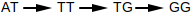
Now, imagine that the sequencer captures that same part of the genome again, but this time the read contains a sequencing error. Depending on where the incorrect nucleotide is, one of the 3 structures will get introduced into the graph:
ATTGG vs ACTGG (within first 2 elements)
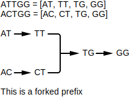
ATTGG vs ATTCG (within last 2 elements)
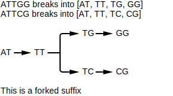
ATTGG vs ATCGG (sandwiched after first 2 elements and before last 2 elements)
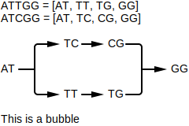
Note that just because these structures exist doesn't mean that the fragments they represent definitively have a sequencing errors. These structures could have been caused by other problems / may not be problems at all:
Bubbles may be caused by repetitive regions of DNA.
Fragments from different parts of the genome that are the same except for a few positions will show up as bubbles.
Bubbles / forks may be caused when sequencing double-stranded DNA.
When both strands of DNA get tangled into the same graph, it's possible that fragments from different strands may form bubbles or forks.
⚠️NOTE️️️⚠️
The Pevzner book says that bubble removal is a common feature in modern assemblers. My assumption is that, before pulling out contigs (described later on), basic probabilities are used to try and suss out if a branch in a bubble / prefix fork / suffix fork is bad and remove it if it is. This (hopefully) results in longer contigs.
ALGORITHM:
def find_head_convergences(graph: Graph[T], branch_len: int) -> List[Tuple[Optional[T], List[T], Optional[T]]]:
root_nodes = filter(lambda n: graph.get_in_degree(n) == 0, graph.get_nodes())
ret = []
for n in root_nodes:
for child in graph.get_outputs(n):
path_from_child = walk_outs_until_converge(graph, child)
if path_from_child is None:
continue
diverging_node = None
branch_path = [n] + path_from_child[:-1]
converging_node = path_from_child[-1]
path = (diverging_node, branch_path, converging_node)
if len(branch_path) <= branch_len:
ret.append(path)
return ret
def find_tail_divergences(graph: Graph[T], branch_len: int) -> List[Tuple[Optional[T], List[T], Optional[T]]]:
tail_nodes = filter(lambda n: graph.get_out_degree(n) == 0, graph.get_nodes())
ret = []
for n in tail_nodes:
for child in graph.get_inputs(n):
path_from_child = walk_ins_until_diverge(graph, child)
if path_from_child is None:
continue
diverging_node = path_from_child[0]
branch_path = path_from_child[1:] + [n]
converging_node = None
path = (diverging_node, branch_path, converging_node)
if len(branch_path) <= branch_len:
ret.append(path)
return ret
def find_bubbles(graph: Graph[T], branch_len: int) -> List[Tuple[Optional[T], List[T], Optional[T]]]:
branching_nodes = filter(lambda n: graph.get_out_degree(n) > 1, graph.get_nodes())
ret = []
for n in branching_nodes:
for child in graph.get_outputs(n):
path_from_child = walk_outs_until_converge(graph, child)
if path_from_child is None:
continue
diverging_node = n
branch_path = path_from_child[:-1]
converging_node = path_from_child[-1]
path = (diverging_node, branch_path, converging_node)
if len(branch_path) <= branch_len:
ret.append(path)
return retFragments from sequencer:
Fragments after being broken to k=4:
De Bruijn graph:

Problem paths:
↩PREREQUISITES↩
TODO: CONTINUE HERE
TODO: CONTINUE HERE
TODO: CONTINUE HERE
TODO: CONTINUE HERE
TODO: CONTINUE HERE
TODO: CONTINUE HERE
TODO: CONTINUE HERE
TODO: CONTINUE HERE
TODO: CONTINUE HERE
TODO: CONTINUE HERE
TODO: CONTINUE HERE
TODO: CONTINUE HERE
TODO: CONTINUE HERE
TODO: CONTINUE HERE
TODO: CONTINUE HERE
TODO: CONTINUE HERE
TODO: CONTINUE HERE
TODO: CONTINUE HERE
TODO: CONTINUE HERE
TODO: CONTINUE HERE
TODO: CONTINUE HERE
TODO: CONTINUE HERE
def walk_until_non_1_to_1(graph: Graph[T], node: T) -> Optional[List[T]]:
ret = [node]
ret_quick_lookup = {node}
while True:
out_degree = graph.get_out_degree(node)
in_degree = graph.get_in_degree(node)
if not(in_degree == 1 and out_degree == 1):
return ret
children = graph.get_outputs(node)
child = next(children)
if child in ret_quick_lookup:
return ret
node = child
ret.append(node)
ret_quick_lookup.add(node)
def walk_until_loop(graph: Graph[T], node: T) -> Optional[List[T]]:
ret = [node]
ret_quick_lookup = {node}
while True:
out_degree = graph.get_out_degree(node)
if out_degree > 1 or out_degree == 0:
return None
children = graph.get_outputs(node)
child = next(children)
if child in ret_quick_lookup:
return ret
node = child
ret.append(node)
ret_quick_lookup.add(node)
def find_maximal_non_branching_paths(graph: Graph[T]) -> List[List[T]]:
paths = []
for node in graph.get_nodes():
out_degree = graph.get_out_degree(node)
in_degree = graph.get_in_degree(node)
if (in_degree == 1 and out_degree == 1) or out_degree == 0:
continue
for child in graph.get_outputs(node):
path_from_child = walk_until_non_1_to_1(graph, child)
if path_from_child is None:
continue
path = [node] + path_from_child
paths.append(path)
skip_nodes = set()
for node in graph.get_nodes():
if node in skip_nodes:
continue
out_degree = graph.get_out_degree(node)
in_degree = graph.get_in_degree(node)
if not (in_degree == 1 and out_degree == 1) or out_degree == 0:
continue
path = walk_until_loop(graph, node)
if path is None:
continue
path = path + [node]
paths.append(path)
skip_nodes |= set(path)
return pathsBacteria are known to have a single chromosome of circular / looping DNA. On that DNA, the replication origin (ori) is the region in which DNA replication starts, while the replication terminus (ter) is where it ends. The ori and ter and usually placed on opposite ends of each other.

The replication process begins by a replication fork opening at the ori. As replication happens, that fork widens until the point it reaches ter...

For each forked single-stranded DNA, DNA polymerases attach on and synthesize a new reverse complement strand so that it turns back into double-stranded DNA....

The process of synthesizing a reverse complement strand is different based on the section of DNA that DNA polymerase is operating on. For each single-stranded DNA, if the direction of that DNA strand is traveling from ...

Since DNA polymerase can only walk over DNA in the reverse direction (3' to 5'), the 2 reverse half-strands will quickly get walked over in one shot. A primer gets attached to the ori, then a DNA polymerase attaches to that primer to begin synthesis of a new strand. Synthesis continues until the ter is reached...
For the forward half-strands, the process is much slower. Since DNA polymerase can only walk DNA in the reverse direction, the forward half-strands get replicated in small segments. That is, as the replication fork continues to grow, every ~2000 nucleotides a new primer attaches to the end of the fork on the forward strands. A new DNA polymerase attaches to each primer and walks in the reverse direction (towards the ori) to synthesize a small segment of DNA. That small segment of DNA is called an Okazaki fragment...

The replication fork will keep widening until the original 2 strands split off. DNA polymerase will have made sure that for each separated strand, a newly synthesized reverse complement is paired to it. The end result is 2 daughter chromosome where each chromosome has gaps...

The Okazaki fragments synthesized on the forward strands end up getting sewn together by DNA ligase...
There are now two complete copies of the DNA.
↩PREREQUISITES↩
Since the forward half-strand gets its reverse complement synthesized at a much slower rate than the reverse half-strand, it stays single stranded for a much longer time. Single-stranded DNA is 100 times more susceptible to mutations than double-stranded DNA. Specifically, in single-stranded DNA, C has a greater tendency to mutate to T. This process of mutation is referred to as deanimation.

The reverse half-strand spends much less time as a single-stranded DNA. As such, it experiences much less C to T mutations.
Ultimately, that means that a single strand will have a different nucleotide distribution between its forward half-strand vs its backward half-strand. If the half-strand being targeted for replication is the ...
To simplify, the ...
You can use a GC skew diagram to help pinpoint where the ori and ter might be. The plot will typically form a peak where the ter is (more G vs C) and form a valley where the ori is (less G vs C). For example, the GC skew diagram for E. coli bacteria shows a distinct peak and distinct valley.
Calculating skew for: ...
Result: [0, 0, 1, 0,...

Min position (ori): 4719166
Max position (ter): 2073768
⚠️NOTE️️️⚠️
The material talks about how not all bacteria have a single peak and single valley. Some may have multiple. The reasoning for this still hasn't been discovered. It was speculated at one point that some bacteria may have multiple ori / ter regions.
↩PREREQUISITES↩
Within the ori region, there exists several copies of some k-mer pattern. These copies are referred to as DnaA boxes.

The DnaA protein binds to a DnaA box to activate the process of DNA replication. Through experiments, biologists have determined that DnaA boxes are typical 9-mers. The 9-mers may not match exactly -- the DnaA protein may bind to ...
⚠️NOTE️️️⚠️
The reason why multiple copies of the DnaA box exist probably has to do with DNA mutation. If one of the copies mutates to a point where the DnaA protein no longer binds to it, it can still bind to the other copies.
In the example below, the general vicinity of E. coli's ori is found using GC skew, then that general vicinity is searched for repeating 9-mers. These repeating 9-mers are potential DnaA box candidates.
Calculating skew for: ...
Result: [0, 0, 1, 0,...
Ori vicinity (min pos): 4719166
In the ori vicinity, found clusters of k=9 (at least 3 occurrences in window of 500) in ... at...
A transcription factor / regulatory protein is an enzyme that influences the rate of gene expression for some set of genes. As the saturation of a transcription factor changes, so does the rate of gene expression for the set of genes that it influences.
Transcription factors bind to DNA near the genes they influence: a transcription factor binding site is located in a gene's upstream region and the sequence at that location is a fuzzy nucleotide sequence of length 8 to 12 called a regulatory motif. The simplest way to think of a regulatory motif is a regex pattern without quantifiers. For example, the regex [AT]TT[GC]CCCTA may match to ATTGCCCTA, ATTCCCCTA, TTTGCCCTA, and TTTCCCCTA. The regex itself is the motif, while the sequences being matched are motif members.
The production of transcription factors may be tied to certain internal or external conditions. For example, imagine a flower where the petals...
The external conditions of sunlight and temperature causes the saturation of some transcription factors to change. Those transcription factors influence the rate of gene expression for the genes that control the bunching and spreading of the petals.
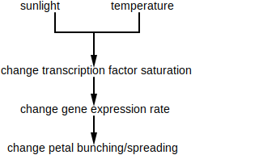
↩PREREQUISITES↩
Given a organism, it's suspected that some physical change in that organism is linked to a transcription factor. However, it isn't known ...
A special device is used to take snapshots of the organism's mRNA at different points in time: DNA microarray / RNA sequencer. Specifically, two snapshots are taken:
Comparing these snapshots identifies which genes have noticeably differing rates of gene expression. If these genes (or a subset of these genes) were influenced by the same transcription factor, their upstream regions would contain members of that transcription factor's regulatory motif.
Since neither the transcription factor nor its regulatory motif are known, there is no specific motif to search for in the upstream regions. But, because motif members are typically similar to each other, motif matrix finding algorithms can be used on these upstream regions to find sets of similar k-mers. These similar k-mers may all be members of the same transcription factor's regulatory motif.

In the example below, a set of genes in baker's yeast (Saccharomyces cerevisiae) are suspected of being influenced by the same transcription factor. These genes are searched for a common motif. Assuming one is found, it could be the motif of the suspected transcription factor.
⚠️NOTE️️️⚠️
The example below hard codes k to 18, but you typically don't know what k should be set to beforehand. The Pevzner book doesn't discuss how to work around this problem. A strategy for finding k may be to run the motif matrix finding algorithm multiple times, but with a different k each time. For each member, if the k-mers selected across the runs came from the same general vicinity of the gene's upstream region, those k-mers may either be picking ...
Organism is baker's yeast. Suspected genes influenced by transcription factor: THI12, YHL017W, SYN8, YCG1, UBX5, and KEI1.
Searching for 18-mer across a set of 6 gene upstream regions...
GAAAAAGGAAGGAAAAAT
GAAAAAAAAAGGAAAAAA
GAAAAAGAAAAAAAAAAA
GAAAAAAAGAAGACAAAG
GAATATAAACATATAAAA
GAATATAAACATATAAAA
Score is: 20
k-mer - A subsequence of length k within some larger biological sequence (e.g. DNA or amino acid chain). For example, in the DNA sequence GAAATC, the following k-mer's exist:
| k | k-mers |
|---|---|
| 1 | G A A A T C |
| 2 | GA AA AA AT TC |
| 3 | GAA AAA AAT ATC |
| 4 | GAAA AAAT AATC |
| 5 | GAAAT AAATC |
| 6 | GAAATC |
kd-mer - A subsequence of length 2k + d within some larger biological sequence (e.g. DNA or amino acid chain) where the first k elements and the last k elements are known but the d elements in between isn't known.
When identifying a kd-mer with a specific k and d, the proper syntax is (k, d)-mer. For example, (1, 2)-mer represents a kd-mer with k=1 and d=2. In the DNA sequence GAAATC, the following (1, 2)-mer's exist: G--A, A--T, A--C.
See read-pair.
5' (5 prime) / 3' (3 prime) - 5' (5 prime) and 3' (3 prime) describe the opposite ends of DNA. The chemical structure at each end is what defines if it's 5' or 3' -- each end is guaranteed to be different from the other. The forward direction on DNA is defined as 5' to 3', while the backwards direction is 3' to 5'.
Two complementing DNA strands will always be attached in opposite directions.

DNA polymerase - An enzyme that replicates a strand of DNA. That is, DNA polymerase walks over a single strand of DNA bases (not the strand of base pairs) and generates a strand of complements. Before DNA polymerase can attach itself and start replicating DNA, it requires a primer.
DNA polymerase is unidirectional, meaning that it can only walk a DNA strand in one direction: reverse (3' to 5')
primer - A primer is a short strand of RNA that binds to some larger strand of DNA (single bases, not a strand of base pairs) and allows DNA synthesis to happen. That is, the primer acts as the entry point for special enzymes DNA polymerases. DNA polymerases bind to the primer to get access to the strand.
replication fork - The process of DNA replication requires that DNA's 2 complementing strands be unwound and split open. The area where the DNA starts to split is called the replication fork. In bacteria, the replication fork starts at the replication origin and keeps expanding until it reaches the replication terminus. Special enzymes called DNA polymerases walk over each unwound strand and create complementing strands.
replication origin (ori) - The point in DNA at which replication starts.
replication terminus (ter) - The point in DNA at which replication ends.
forward half-strand / reverse half-strand - Bacteria are known to have a single chromosome of circular / looping DNA. In this DNA, the replication origin (ori) is the region of DNA where replication starts, while the replication terminus (ter) is where replication ends.

If you split up the DNA based on ori and ter being cutting points, you end up with 4 distinct strands. Given that the direction of a strand is 5' to 3', if the direction of the strand starts at...
ori and ends at ter, it's called the forward half-strand.

ter and ends at ori, it's called the reverse half-strand.
⚠️NOTE️️️⚠️
leading half-strand / lagging half-strand - Given the 2 strands tha make up a DNA molecule, the strand that goes in the...
This nomenclature has to do with DNA polymerase. Since DNA polymerase can only walk in the reverse direction (3' to 5'), it synthesizes the leading half-strand in one shot. For the lagging half-strand (5' to 3'), multiple DNA polymerases have to used to synthesize DNA, each binding to the lagging strand and walking backwards a small amount to generate a small fragment of DNA (Okazaki fragment). the process is much slower for the lagging half-strand, that's why it's called lagging.
⚠️NOTE️️️⚠️
Okazaki fragment - A small fragment of DNA generated by DNA polymerase for forward half-strands. DNA synthesis for the forward half-strands can only happen in small pieces. As the fork open ups every ~2000 nucleotides, DNA polymerase attaches to the end of the fork on the forward half-strand and walks in reverse to generate that small segment (DNA polymerase can only walk in the reverse direction).
DNA ligase - An enzyme that sews together short segments of DNA called Okazaki fragments by binding the phosphate group on the end of one strand with the deoxyribose group on the other strand.
DnaA box - A sequence in the ori that the DnaA protein (responsible for DNA replication) binds to.
single stranded DNA - A single strand of DNA, not bound to a strand of its reverse complements.

double stranded DNA - Two strands of DNA bound together, where each strand is the reverse complement of the other.

gene - A segment of DNA that contains the instructions for either a protein or functional RNA.
gene product - The final synthesized material resulting from the instructions that make up a gene. That synthesized material either being a protein or functional RNA.
transcription - The process of transcribing a gene to RNA. Specifically, the enzyme RNA polymerase copies the segment of DNA that makes up that gene to a strand of RNA.

translation - The process of translating mRNA to protein. Specifically, a ribosome takes in the mRNA generated by transcription and outputs the protein that it codes for.

gene expression - The process by which a gene is synthesized into a gene product. When the gene product is...

regulatory gene / regulatory protein - The proteins encoded by these genes effect gene expression for certain other genes. That is, a regulatory protein can cause certain other genes to be expressed more (promote gene expression) or less (repress gene expression).
Regulatory genes are often controlled by external factors (e.g. sunlight, nutrients, temperature, etc..)
feedback loop / negative feedback loop / positive feedback loop - A feedback loop is a system where the output (or some part of the output) is fed back into the system to either promote or repress further outputs.

A positive feedback loop amplifies the output while a negative feedback loop regulates the output. Negative feedback loops in particular are important in biology because they allow organisms to maintain homeostasis / equilibrium (keep a consistent internal state). For example, the system that regulates core temperatures in a human is a negative feedback loop. If a human's core temperature gets too...
In the example above, the output is the core temperature. The body monitors its core temperature and employs mechanisms to bring it back to normal if it goes out of range (e.g. sweat, shiver). The outside temperature is influencing the body's core temperature as well as the internal shivering / sweating mechanisms the body employs.

circadian clock / circadian oscillator - A biological clock that synchronizes roughly around the earth's day-night cycle. This internal clock helps many species regulate their physical and behavioural attributes. For example, hunt during the night vs sleep during the day (e.g. nocturnal owls).
upstream region - The area just before some interval of DNA. Since the direction of DNA is 5' to 3', this area is towards the 5' end (upper end).
downstream region - The area just after some interval of DNA. Since the direction of DNA is 5' to 3', this area is towards the 3' end (lower end).
transcription factor - A regulatory protein that controls the rate of transcription for some gene that it has influence over (the copying of DNA to mRNA). The protein binds to a specific sequence in the gene's upstream region.
motif - A pattern that matches against many different k-mers, where those matched k-mers have some shared biological significance. The pattern matches a fixed k where each position may have alternate forms. The simplest way to think of a motif is a regex pattern without quantifiers. For example, the regex [AT]TT[GC]C may match to ATTGC, ATTCC, TTTGC, and TTTCC.
motif member - A specific nucleotide sequence that matches a motif. For example, given a motif represented by the regex [AT]TT[GC]C, the sequences ATTGC, ATTCC, TTTGC, and TTTCC would be its members.
motif matrix - A set of k-mers stacked on top of each other in a matrix, where the k-mers are either...
For example, the motif [AT]TT[GC]C has the following matrix:
| 0 | 1 | 2 | 3 | 4 |
|---|---|---|---|---|
| A | T | T | G | C |
| A | T | T | C | C |
| T | T | T | G | C |
| T | T | T | C | C |
regulatory motif - The motif of a transcription factor, typically 8 to 12 nucleotides in length.
transcription factor binding site - The physical binding site for a transcription factor. A gene that's regulated by a transcription factor needs a sequence located in its upstream region that the transcription factor can bind to: a motif member of that transcription factor's regulatory motif.
⚠️NOTE️️️⚠️
A gene's upstream region is the 600 to 1000 nucleotides preceding the start of the gene.
cDNA - A single strand of DNA generated from mRNA. The enzyme reverse transcriptase scans over the mRNA and creates the complementing single DNA strand.

The mRNA portion breaks off, leaving the single-stranded DNA.

DNA microarray / DNA array - A device used to compare gene expression. This works by measuring 2 mRNA samples against each other: a control sample and an experimental sample. The samples could be from...
Both mRNA samples are converted to cDNA and are given fluorescent dyes. The control sample gets dyed green while the experimental sample gets dyed red.

A sheet is broken up into multiple regions, where each region has the cDNA for one specific gene from the control sample printed.

The idea is that once the experimental cDNA is introduced to that region, it should bind to the control cDNA that's been printed to form double-stranded DNA. The color emitted in a region should correspond to the amount of gene expression for the gene that region represents. For example, if a region on the sheet is fully yellow, it means that the gene expression for that gene is roughly equal (red mixed with green is yellow).
greedy algorithm - An algorithm that tries to speed things up by taking the locally optimal choice at each step. That is, the algorithm doesn't look more than 1 step ahead.
For example, imagine a chess playing AI that had a strategy of trying to eliminate the other player's most valuable piece at each turn. It would be considered greedy because it only looks 1 move ahead before taking action. Normal chess AIs / players look many moves ahead before taking action. As such, the greedy AI may be fast but it would very likely lose most matches.
Cromwell's rule - When a probability is based off past events, 0.0 and 1.0 shouldn't be used. That is, if you've...
Unless you're dealing with hard logical statements where prior occurrences don't come in to play (e.g. 1+1=2), you should include a small chance that some extremely unlikely event may happen. The example tossed around is "the probability that the sun will not rise tomorrow." Prior recorded observations show that that sun has always risen, but that doesn't mean that there's a 1.0 probability of the sun rising tomorrow (e.g. some extremely unlikely cataclysmic event may prevent the sun from rising).
Laplace's rule of succession - If some independent true/false event occurs n times, and s of those n times were successes, it's natural for people to assume the probability of success is . However, if the number of successes is 0, the probability would be 0.0. Cromwell's rule states that when a probability is based off past events, 0.0 and 1.0 shouldn't be used. As such, a more appropriate / meaningful measure of probability is .
For example, imagine you're sitting on a park bench having lunch. Of the 8 birds you've seen since starting your lunch, all have been pigeons. If you were to calculate the probability that the next bird you'll see a crow, would be flawed because it states that there's no chance that the next bird will be a crow (there obviously is a chance, but it may be a small chance). Instead, applying Laplace's rule allows for the small probability that a crow may be seen next: .
Laplace's rule of succession is more meaningful when the number of trials (n) is small.
pseudocount - When a zero is replaced with a small number to prevent unfair scoring. See Laplace's rule of succession.
randomized algorithm - An algorithm that uses a source of randomness as part of its logic. Randomized algorithms come in two forms: Las Vegas algorithms and Monte Carlo algorithms
Las Vegas algorithm - A randomized algorithm that delivers a guaranteed exact solution. That is, even though the algorithm makes random decisions it is guaranteed to converge on the exact solution to the problem its trying to solve (not an approximate solution).
An example of a Las Vegas algorithm is randomized quicksort (randomness is applied when choosing the pivot).
Monte Carlo algorithm - A randomized algorithm that delivers an approximate solution. Because these algorithms are quick, they're typically run many times. The approximation considered the best out of all runs is the one that gets chosen as the solution.
An example of a Monte Carlo algorithm is a genetic algorithm to optimize the weights of a deep neural network. That is, a step of the optimization requires running n different neural networks to see which gives the best result, then replacing those n networks with n copies of the best performing network where each copy has randomly tweaked weights. At some point the algorithm will stop producing incrementally better results.
Perform the optimization (the entire thing, not just a single step) thousands of times and pick the best network.
consensus string - The k-mer generated by selecting the most abundant column at each index of a motif matrix.
| 0 | 1 | 2 | 3 | 4 | |
|---|---|---|---|---|---|
| k-mer 1 | A | T | T | G | C |
| k-mer 2 | A | T | T | C | C |
| k-mer 3 | T | T | T | G | C |
| k-mer 4 | T | T | T | C | C |
| k-mer 5 | A | T | T | C | G |
| consensus | A | T | T | C | C |
The generate k-mer may also use a hybrid alphabet. The consensus string for the same matrix above using IUPAC nucleotide codes: WTTSS.
entropy - The uncertainty associated with a random variable. Given some set of outcomes for a variable, it's calculated as .
This definition is for information theory. In other contexts (e.g. physics, economics), this term has a different meaning.
sequence - The ordered elements that make up some biological entity. For example, a DNA sequence contains the set of nucleotides and their positions for that DNA strand.
sequencing - The process of determining which nucleotides are assigned to which positions in a strand of DNA or RNA.
The machinery used for DNA sequencing is called a sequencer. A sequencer takes multiple copies of the same DNA, breaks that DNA up into smaller fragments, and scans in those fragments. Each fragment is typically the same size but has a unique starting offset. Because the starting offsets are all different, the original larger DNA sequence that can be constructed by finding fragment with overlapping regions and stitching them together.
| 0 | 1 | 2 | 3 | 4 | 5 | 6 | 7 | 8 | 9 | |
|---|---|---|---|---|---|---|---|---|---|---|
| read 1 | C | T | T | C | T | T | ||||
| read 2 | G | C | T | T | C | T | ||||
| read 3 | T | G | C | T | T | C | ||||
| read 4 | T | T | G | C | T | T | ||||
| read 5 | A | T | T | G | C | T | ||||
| reconstructed | A | T | T | G | C | T | T | C | T | T |
sequencer - A machine that performs DNA or RNA sequencing.
sequencing error - An error caused by a sequencer returning a fragment where a nucleotide was misinterpreted at one or more positions (e.g. offset 3 was actually a C but it got scanned in as a G).
read - A segment of genome scanned in during the process of sequencing.
read-pair - A segment of genome scanning in during the process of sequencing, where the middle of the segment is unknown. That is, the first k elements and the last k elements are known, but the d elements in between aren't known. The total size of the segment is 2k + d.
Sequencers provide read-pairs as an alternative to longer reads because the longer a read is the more errors it contains.
See kd-mer.
fragment - A scanned sequence returned by a sequencer. Represented as either a read or a read-pair.
assembly - The process of stitching together overlapping fragments to construct the sequence of the original larger DNA that those fragments came from.
hybrid alphabet - When representing a sequence that isn't fully conserved, it may be more appropriate to use an alphabet where each letter can represent more than 1 nucleotide. For example, the IUPAC nucleotide codes provides the following alphabet:
If the sequence being represented can be either AAAC or AATT, it may be easier to represent a single string of AAWY.
IUPAC nucleotide code - A hybrid alphabet with the following mapping:
| Letter | Base |
|---|---|
| A | Adenine |
| C | Cytosine |
| G | Guanine |
| T (or U) | Thymine (or Uracil) |
| R | A or G |
| Y | C or T |
| S | G or C |
| W | A or T |
| K | G or T |
| M | A or C |
| B | C or G or T |
| D | A or G or T |
| H | A or C or T |
| V | A or C or G |
| N | any base |
| . or - | gap |
sequence logo - A graphical representation of how conserved a sequence's positions are. Each position has its possible nucleotides stacked on top of each other, where the height of each nucleotide is based on how conserved it is. The more conserved a position is, the taller that column will be.
Typically applied to DNA or RNA, and May also be applied to other biological sequence types (e.g. amino acids).
The following is an example of a logo generated from a motif sequence:
Generating logo for the following motif matrix...
TCGGGGGTTTTT
CCGGTGACTTAC
ACGGGGATTTTC
TTGGGGACTTTT
AAGGGGACTTCC
TTGGGGACTTCC
TCGGGGATTCAT
TCGGGGATTCCT
TAGGGGAACTAC
TCGGGTATAACC
Result...
transposon - A DNA sequence that can change its position within a genome, altering the genome size. They come in two flavours:
Often times, transposons cause disease. For example, ...
adjacency list - An internal representation of a graph where each node has a list of pointers to other nodes that it can forward to.

The graph above represented as an adjacency list would be...
| From | To |
|---|---|
| A | B |
| B | C |
| C | D,E |
| D | F |
| E | D,F |
| F |
adjacency matrix - An internal representation of a graph where a matrix defines the number of times that each node forwards to every other node.
The graph above represented as an adjacency matrix would be...
| A | B | C | D | E | F | |
|---|---|---|---|---|---|---|
| A | 0 | 1 | 0 | 0 | 0 | 0 |
| B | 0 | 0 | 1 | 0 | 0 | 0 |
| C | 0 | 0 | 0 | 1 | 1 | 0 |
| D | 0 | 0 | 0 | 0 | 0 | 1 |
| E | 0 | 0 | 0 | 1 | 0 | 1 |
| F | 0 | 0 | 0 | 0 | 0 | 0 |
Hamiltonian path - A path in a graph that visits every node exactly once.
The graph below has the Hamiltonian path ABCEDF.
Eulerian path - A path in a graph that visits every edge exactly once.
In the graph below, the Eulerian path is (A,B), (B,C), (C,D), (D,E), (E,C), (C,D), (D,F).

Eulerian cycle - An Eulerian path that forms a cycle. That is, a path in a graph that is a cycle and visits every edge exactly once.
The graph below has an Eulerian cycle of (A,B), (B,C) (C,D), (D,F), (F,C), (C,A).

If a graph contains an Eulerian cycle, it's said to be an Eulerian graph.
Eulerian graph - For a graph to be Eulerian, it must have am Eulerian cycle. For a graph to have an Eulerian cycle, it must be both balanced and strongly connected.

Note how in the graph above, ...
every node is reachable from every other node (strongly connected),
every node has an outdegree equal to its indegree (balanced).
| Node | Indegree | Outdegree |
|---|---|---|
| A | 1 | 1 |
| B | 1 | 1 |
| C | 2 | 2 |
| D | 1 | 1 |
| F | 1 | 1 |
In contrast, the following graphs are not Eulerian graphs (no Eulerian cycles exist):
Strongly connected but not balanced.

Balanced but not strongly connected.

Balanced but disconnected (not strongly connected).

disconnected / connected - A graph is disconnected if you can break it out into 2 or more distinct sub-graphs without breaking any paths. In other words, the graph contains at least two nodes which aren't contained in any path.
The graph below is disconnected because there is no path that contains E, F, G, or H and A, B, C, or D.

The graph below is connected.

strongly connected - A graph is strongly connected if every node is reachable from every other node.
The graph below is not strongly connected because neither A nor B is reachable by C, D, E, or F.
The graph below is strongly connected because all nodes are reachable from all nodes.
indegree / outdegree - The number of edges leading into / out of a node of a directed graph.
The node below has an indegree of 3 and an outdegree of 1.

balanced node - A node of a directed graph that has an equal indegree and outdegree. That is, the number of edges coming in is equal to the number of edges going out.
The node below has an indegree and outdegree of 1. It is balanced.

balanced graph - A directed graph where ever node is balanced.
The graph below is balanced because all nodes are balanced.
| Node | Indegree | Outdegree |
|---|---|---|
| A | 1 | 1 |
| B | 1 | 1 |
| C | 2 | 2 |
| D | 1 | 1 |
| F | 1 | 1 |
overlap graph - A graph representing the k-mers making up a string. Specifically, the graph is built in 2 steps:
Each node is a fragment.
Each edge is between overlapping fragments (nodes), where the ...

Overlap graphs used for genome assembly.
de Bruijn graph - A special graph representing the k-mers making up a string. Specifically, the graph is built in 2 steps:
Each k-mer is represented as an edge connecting 2 nodes. The ...
For example, ...

Each node representing the same value is merged together to form the graph.
For example, ...
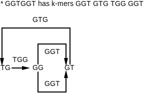
De Bruijn graphs are used for genome assembly. It's much faster to assemble a genome from a de Bruijn graph than it is to from an overlap graphs.
De Bruijn graphs were originally invented to solve the k-universal string problem.
k-universal - For some alphabet and k, a string is considered k-universal if it contains every k-mer for that alphabet exactly once. For example, for an alphabet containing only 0 and 1 (binary) and k=3, a 3-universal string would be 0001110100 because it contains every 3-mer exactly once:
⚠️NOTE️️️⚠️
This is effectively assembly. There are a set of k-mers and they're being stitched together to form a larger string. The only difference is that the elements aren't nucleotides.
De Bruijn graphs were invented in an effort to construct k-universal strings for arbitrary values of k. For example, given the k-mers in the example above (000, 001, ...), a k-universal string can be found by constructing a de Bruijn graph from the k-mers and finding a Eulerian cycle in that graph.

There are multiple Eulerian cycles in the graph, meaning that there are multiple 3-universal strings:
For larger values of k (e.g. 20), finding k-universal strings would be too computationally intensive without De Bruijn graphs and Eulerian cycles.
coverage - Given a substring from some larger sequence that was reconstructed from a set of fragments, the coverage of that substring is the number of reads used to construct it. The substring length is typically 1: the coverage for each position of the sequence.

read breaking - The concept of taking multiple reads and breaking them up into smaller reads.
When read breaking, smaller k-mers result in better coverage but also make the de Bruijn graph more tangled. The more tangled the de Bruijn graph is, the harder it is to infer the full sequence.
In the example above, the average coverage...
See also: read-pair breaking.
⚠️NOTE️️️⚠️
What purpose does this actually serve? Mimicking 1 long read as n shorter reads isn't equivalent to actually having sequenced those n shorter reads. For example, what if the longer read being broken up has an error? That error replicates when breaking into n shorter reads, which gives a false sense of having good coverage and makes it seems as if it wasn't an error.
read-pair breaking - The concept of taking multiple read-pairs and breaking them up into read-pairs with a smaller k.
When read-pair breaking, a smaller k results in better coverage but also make the de Bruijn graph more tangled. The more tangled the de Bruijn graph is, the harder it is to infer the full sequence.
In the example above, the average coverage...
See also: read breaking.
⚠️NOTE️️️⚠️
What purpose does this actually serve? Mimicking 1 long read-pair as n shorter read-pairs isn't equivalent to actually having sequenced those n shorter read-pairs. For example, what if the longer read-pair being broken up has an error? That error replicates when breaking into n shorter read-pairs, which gives a false sense of having good coverage and makes it seems as if it wasn't an error.
contig - A long continuous piece of DNA. Derived by searching a directed graph for paths that are the longest possible stretches of nodes with 1 indegree and 1 outdegree. That is, a path must either ...
For example, in the following de Bruijn graph, the contigs are: GTGG, GGT, and GGT:
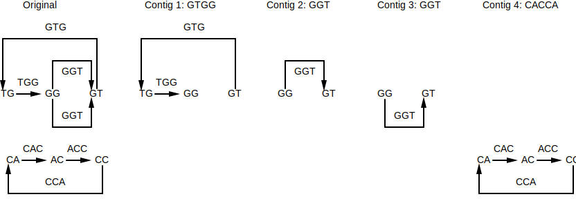
Assemblies often have gaps due to...
As such, biologists / bioinformaticians have no choice but to settle on contigs.
ribonucleotide - Elements that make up RNA, similar to how nucleotides are the elements that make up DNA.
antibiotic - A substance (typically an enzyme) for killing, preventing, or inhibiting the grow of bacterial infections.
amino acid - The building blocks of peptides / proteins, similar to how nucleotides are the building blocks of DNA.
| 1 Letter Code | 3 Letter Code | Amino Acid |
|---|---|---|
| A | Ala | Alanine |
| C | Cys | Cysteine |
| D | Asp | Aspartic acid |
| E | Glu | Glutamic acid |
| F | Phe | Phenylalanine |
| G | Gly | Glycine |
| H | His | Histidine |
| I | Ile | Isoleucine |
| K | Lys | Lysine |
| L | Leu | Leucine |
| M | Met | Methionine |
| N | Asn | Asparagine |
| P | Pro | Proline |
| Q | Gln | Glutamine |
| R | Arg | Arginine |
| S | Ser | Serine |
| T | Thr | Threonine |
| V | Val | Valine |
| W | Trp | Tryptophan |
| Y | Tyr | Tyrosine |
peptide - A short amino acid chain of at least size two. Peptides are considered miniature proteins, but when something should be called a peptide vs a protein is loosely defined: the cut-off is anywhere between 50 to 100 amino acids.
polypeptide - A peptide of at least size 10.
central dogma of molecular biology - The overall concept of transcription and translation: Instructions for making a protein are copied from DNA to RNA, then RNA feeds into the ribosome to make that protein (DNA → RNA → Protein).
Most, not all, peptides are synthesized as described above. Non-ribosomal peptides are synthesized outside of the transcription and translation.
non-ribosomal peptide - A peptide that was synthesized by a protein called NRP synthetase rather than synthesized by a ribosome. NRP synthethase builds peptides one amino acid at a time without relying on transcription or translation.
Non-ribosomal peptides may be cyclic. Common use-cases for non-ribosomal peptides:
mass spectrometer - A device that shatters molecules into pieces and weighs the resulting pieces (measured in daltons). Mass spectrometry can be used to sequence peptides by inferring the amino acid sequence from the collection of masses.
experimental spectrum - Given a shattered molecule, a collection consisting of the each piece's mass as measured by a mass spectrometer. For example, given the peptide ACDEFG, the experimental spectrum may be...
Experimental spectrum are the masses returned from an actual mass spectrometry experiment, while theoretical spectrum are all possible masses for a mass spectrometry experiment.
theoretical spectrum - A collection consisting of all possible masses measurable by a mass spectrometer in addition to 0 and the mass of the entire molecule being measured. For example, given the peptide ACDEFG, the theoretical spectrum would be...
Experimental spectrum are the masses returned from an actual mass spectrometry experiment, while theoretical spectrum are all possible masses for a mass spectrometry experiment.
ideal spectrum - When the experimental spectrum matches the theoretical spectrum.
dalton - A unit of measurement used in physics and chemistry. 1 Dalton is approximately the mass of a single proton / neutron, derived by taking the mass of a carbon-12 atom and dividing it by 12.
codon - A sequence of 3 ribonucleotides that maps to an amino acid or a stop marker. During translation, the ribosome translates the RNA to a protein 3 ribonucleotides at a time:
⚠️NOTE️️️⚠️
The stop marker tells the ribosome to stop translating / the protein is complete.
⚠️NOTE️️️⚠️
The codons are listed as ribonucleotides (RNA). For nucleotides (DNA), swap U with T.
| 1 Letter Code | 3 Letter Code | Amino Acid | Codons |
|---|---|---|---|
| A | Ala | Alanine | GCA, GCC, GCG, GCU |
| C | Cys | Cysteine | UGC, UGU |
| D | Asp | Aspartic acid | GAC, GAU |
| E | Glu | Glutamic acid | GAA, GAG |
| F | Phe | Phenylalanine | UUC, UUU |
| G | Gly | Glycine | GGA, GGC, GGG, GGU |
| H | His | Histidine | CAC, CAU |
| I | Ile | Isoleucine | AUA, AUC, AUU |
| K | Lys | Lysine | AAA, AAG |
| L | Leu | Leucine | CUA, CUC, CUG, CUU, UUA, UUG |
| M | Met | Methionine | AUG |
| N | Asn | Asparagine | AAC, AAU |
| P | Pro | Proline | CCA, CCC, CCG, CCU |
| Q | Gln | Glutamine | CAA, CAG |
| R | Arg | Arginine | AGA, AGG, CGA, CGC, CGG, CGU |
| S | Ser | Serine | AGC, AGU, UCA, UCC, UCG, UCU |
| T | Thr | Threonine | ACA, ACC, ACG, ACU |
| V | Val | Valine | GUA, GUC, GUG, GUU |
| W | Trp | Tryptophan | UGG |
| Y | Tyr | Tyrosine | UAC, UAU |
| * | * | STOP | UAA, UAG, UGA |
reading frame - The different ways of dividing a DNA string into codons. Specifically, there are 6 different ways that a DNA string can be divided into codons:
For example, given the the string ATGTTCCATTAA, the the following codon division are possible:
| DNA | Start Index | Discard Prefix | Codons | Discard Suffix |
|---|---|---|---|---|
| ATGTTCCATTAA | 0 | ATG, TTC, CAT, TAA | ||
| ATGTTCCATTAA | 1 | A | TGT, TCC, ATT | AA |
| ATGTTCCATTAA | 2 | AT | GTT, CCA, TTA | A |
| TTAATGGAACAT | 0 | TTA, ATG, GAA, CAT | ||
| TTAATGGAACAT | 1 | T | TAA, TGG, AAC | AT |
| TTAATGGAACAT | 2 | TT | AAT, GGA, ACA | T |
⚠️NOTE️️️⚠️
TTAATGGAACAT is the reverse complement of ATGTTCCATTAA.
encode - When a DNA string or its reverse complement is made up of the codons required for an amino acid sequence. For example, ACAGTA encodes for the amino acid sequence...